<!doctype html>
<html lang="en">
<head>
  <meta charset="utf-8">
  <meta name="viewport" content="width=device-width, initial-scale=1">
  <title>arxiv digest — 2026-10-07</title>
  <style>
:root {
  --bg: #ffffff;
  --fg: #1f2328;
  --muted: #59636e;
  --border: #d0d7de;
  --card: #f6f8fa;
  --link: #0969da;
}
body {
  max-width: 980px;
  margin: 0 auto;
  padding: 2rem 1rem 5rem;
  font-family: -apple-system, BlinkMacSystemFont, "Segoe UI", Helvetica, Arial, sans-serif;
  line-height: 1.55;
  color: var(--fg);
  background: var(--bg);
}
a { color: var(--link); }
img { max-width: 100%; height: auto; }
pre, code { background: var(--card); border-radius: 6px; }
pre { padding: 1rem; overflow-x: auto; }
blockquote { border-left: 4px solid var(--border); padding-left: 1rem; color: var(--muted); }
details { margin: 0.6rem 0; }
summary { cursor: pointer; font-weight: 600; }
.paper-figures-scroll {
  display: flex;
  gap: 1rem;
  overflow-x: auto;
  overscroll-behavior-x: contain;
  padding: 0.75rem 0.25rem 1rem;
  margin: 1rem 0 1.25rem;
  border-top: 1px solid var(--border);
  border-bottom: 1px solid var(--border);
  scroll-snap-type: x proximity;
}
.paper-figure-card {
  flex: 0 0 min(260px, 72vw);
  scroll-snap-align: start;
  background: var(--card);
  border: 1px solid var(--border);
  border-radius: 12px;
  padding: 0.55rem;
}
.paper-figure-card img {
  display: block;
  width: 100%;
  max-height: 240px;
  object-fit: contain;
  background: white;
  border-radius: 8px;
}
.paper-figure-caption {
  display: block;
  margin-top: 0.5rem;
  color: var(--muted);
  font-size: 0.85rem;
}
.figure-strip-hint {
  color: var(--muted);
  font-size: 0.9rem;
  margin-bottom: -0.3rem;
}
</style>
  <!-- MathJax: renders $...$ inline math and $$...$$ display math, plus
       \(...\) and \[...\]. Loaded from the official CDN; works offline
       once cached. Configured to skip code/pre blocks so arxiv IDs that
       look like dollar amounts don't get mangled. -->
  <script>
    window.MathJax = {
      tex: {
        inlineMath: [['$', '$'], ['\\(', '\\)']],
        displayMath: [['$$', '$$'], ['\\[', '\\]']],
        processEscapes: true,
        processEnvironments: true
      },
      options: {
        skipHtmlTags: ['script', 'noscript', 'style', 'textarea', 'pre', 'code'],
        ignoreHtmlClass: 'tex2jax_ignore',
        processHtmlClass: 'tex2jax_process'
      }
    };
  </script>
  <script id="MathJax-script" async
    src="https://cdn.jsdelivr.net/npm/mathjax@3/es5/tex-chtml.js"></script>
</head>
<body>
<header style="background-color: #333; color: white; padding: 15px; margin-bottom: 20px;">
  <h1 style="margin: 0; font-size: 24px;">
    <a href="https://ochelpan.github.io/arXiv_clean/" style="color: white; text-decoration: none;">Main</a>
  </h1>
</header>

<h1>Daily arXiv Report</h1>

<hr>
<p>
<a href="index.html">← Index</a>
 · <a href="papers_08.html">← Previous</a> · <a href="papers_10.html">Next →</a>
</p>
<hr>

<h2>Papers 161–180</h2>
<p><a id="paper-2610.06264"></a></p>
<h3 id="suppressing-frequency-collisions-in-a-quantum-processor"><a href="http://arxiv.org/abs/2610.06264v1">Suppressing Frequency Collisions in a Quantum Processor</a></h3>
<p><strong>Authors:</strong> Kuljeet Kaur, Xuexin Xu, Mohammad H. Ansari<br>
<strong>Type:</strong> theory · <strong>Category:</strong> quantum information and computing · <strong>PDF:</strong> <a href="https://arxiv.org/pdf/2610.06264v1">https://arxiv.org/pdf/2610.06264v1</a><br>
<strong>Analysis basis:</strong> full PDF text, analyzed in chunks
<strong>Topic relevance:</strong> <code>QC/QI experiment</code> <strong>2/5</strong></p>
<div class="figure-strip-hint">↔ Scroll figures horizontally</div>
<div class="paper-figures-scroll">
<figure class="paper-figure-card">
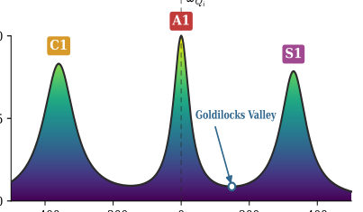
<figcaption class="paper-figure-caption"><b>Fig 1.</b> Figure 1. (a) Overview of the frequency-allocation framework for six qubits, represented by boxes arranged in two rows. Left: the initial assignment contains three qubits involved in frequency collisions (red), while the remaining qubits are collision-free (green). Center: Perturbative estimation of the collision-Hamiltonian coefficients Wij and χijk, defining the cost function optimized using simulated annealing, QAOA, and DC-QAOA. Cluster stitching reconciles overlapping lo- cal solutions into a globally consistent assignment. Right: the resulting collision-free frequency map, with optimiza- tion performance benchmarked against classical simulated an- nealing. (b) Frequency-collision...</figcaption>
</figure>
<figure class="paper-figure-card">
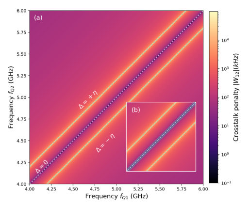
<figcaption class="paper-figure-caption"><b>Fig 2.</b> Figure 2. Hardware penalty function |W12| evaluated as a function of qubit frequencies fQ1 and fQ2 on a logarithmic color scale. (a) Full tuning range with two bright diagonal bands marks the anharmonicity shifted resonance condition f12 ≈±η, while the main diagonal (f12 = 0) remains dark as the direct dispersive shifts cancel exactly at zero detuning, so the true danger zone is displaced from, not centered on, fre- quency degeneracy. (b)Inset resolving the narrow safe valley immediately surrounding f12 = 0, bounded on both sides by the ±η resonances.</figcaption>
</figure>
<figure class="paper-figure-card">
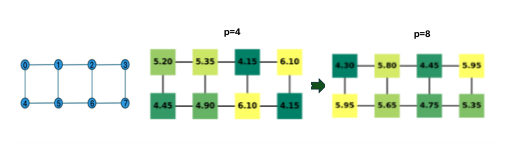
<figcaption class="paper-figure-caption"><b>Fig 3.</b> Figure 3. Mapping of the multi-tiered penalty system used in the variational optimization loop for the 8-qubit ladder sys- tem. The landscape highlights the divergent energy barriers that the DC-QAOA must navigate. Optimal frequency as- signments are identified within the localized minima.</figcaption>
</figure>
<figure class="paper-figure-card">
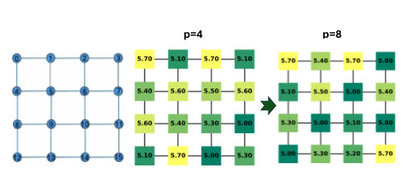
<figcaption class="paper-figure-caption"><b>Fig 4.</b> Figure 4. Frequency allocation on a 16-qubit square lattice obtained with the DC-QAOA framework, shown for circuit depths p = 4 (left) and p = 8 (right). Each node color repre- sents the frequency assigned to a qubit by the variational op- timization loop acting on the penalty Hamiltonian HC. Some spectator qubits in diagonally-opposite positions receive sim- ilar frequencies; this residual degeneracy arises because the local cluster-stitching protocol does not enforce constraints between qubits in non-adjacent clusters, and can be mitigated by extending the constraint graph to include all-to-all spec- tator interactions or by tightening the per-constraint penalty cutoff.</figcaption>
</figure>
<figure class="paper-figure-card">
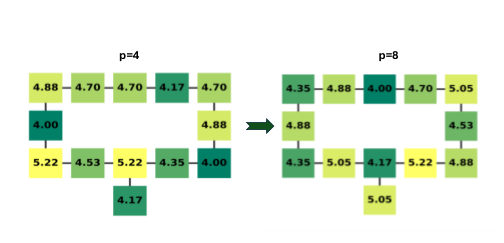
<figcaption class="paper-figure-caption"><b>Fig 5.</b> Figure 5. Frequency allocation on a 13-qubit hexagonal ring obtained with the DC-QAOA framework, acting on the multi-tiered penalty Hamiltonian HC. Node colors indicate the frequencies assigned by the variational optimization loop, which navigates the divergent energy barriers associated with the A1, C1, and S1 collision mechanisms to reach the localized minima corresponding to collision-free assignments.</figcaption>
</figure>
</div>

<p><strong>Summary.</strong> This paper tackles the critical issue of frequency crowding in superconducting quantum processors, which limits scalability through crosstalk. It formulates the problem as a Max-k-Cut optimization, developing a Hamiltonian framework that incorporates multiple collision mechanisms. The resulting methodology enables systematic, hardware-aware frequency planning, connecting microscopic physics to large-scale processor design.</p>
<p><strong>Why it may be interesting.</strong> This work directly addresses the physical constraints limiting qubit connectivity and scaling in superconducting quantum hardware by providing a systematic, physics-informed optimization tool.</p>
<details>
<summary>Detailed structure</summary>
<p><strong>Main problem.</strong> Frequency crowding, caused by close spacing of qubit transitions, severely limits the scalability of superconducting quantum processors due to crosstalk and leakage errors.</p>
<p><strong>Main result.</strong> The authors developed a hardware-aware optimization framework that maps collision penalties to a Max-k-Cut problem, showing that counterdiabatic QAOA and simulated annealing can systematically solve for optimal, collision-free qubit frequency assignments.</p>
<p><strong>Method.</strong> The problem is formulated using a Hamiltonian-based framework, mapping collision mechanisms (two- and three-body) onto a discrete cost function solved via quantum optimization algorithms (QAOA) and classical solvers (Simulated Annealing).</p>
<p><strong>Model / system.</strong> The system is superconducting quantum processors using transmon qubits, modeled by a cost Hamiltonian $H_C$ that includes penalties for nearest-neighbor collisions ($A_1$), gate clashes ($C_1$), and spectator effects ($S_1$).</p>
<p><strong>Key observables.</strong> Collision penalties (cost function), gate and idle fidelities, and the resulting frequency-collision landscape.</p>
<p><strong>Important parameters / regimes.</strong> Frequency spacing ($\Delta = 0.5 	ext{ GHz}$), operating frequency ($\omega = 5.5 	ext{ GHz}$), and the specific collision types (A1, C1, S1).</p>
<p><strong>Assumptions / limitations.</strong> The leading collision terms ($A_1, C_1, S_1$) dominate the landscape, allowing higher-order terms to be neglected in the initial modeling.</p>
<p><strong>Figures summary.</strong> Figure 1 illustrates the framework flow from initial assignment to the final collision-free map. Figure 2 shows the hardware penalty function landscape for two coupled qubits, defining safe operating valleys.</p>
<p><strong>Paper structure.</strong> The paper introduces the physical problem, formulates it as a Max-k-Cut problem using a detailed collision Hamiltonian, develops scalable protocols like cluster-stitching, and benchmarks various optimization algorithms (DC-QAOA, QAOA, SA).</p>
</details>
<details>
<summary>Abstract</summary>
<p>Frequency crowding, the close spacing of qubit transitions, limits superconducting quantum processors through crosstalk, leakage, and spectator dependent errors. We introduce a Hamiltonian based framework that maps two- and three-body collision mechanisms onto a Max-k-Cut problem on qubit frequency allocation. In order to make larger lattices tractable, we introduce a cluster-stitching protocol that decomposes larger lattices into overlapping subgraphs and reconciles their local frequency assignments into globally consistent configurations. We tested our proposed framework across multiple qubit architectures to suppress dominant collision penalties by revealing a hardware residual crosstalk. We benchmark digitized counterdiabatic QAOA (DC-QAOA), standard QAOA, and simulated annealing. Counterdiabatic terms improve QAOA optimization near steep collision penalties, while simulated annealing achieves the lowest costs on the tested instances. These results indicate that our hardware-aware optimization connects microscopic interaction physics to processor-level frequency planning. These results enable a systematic solver for benchmarking of scalable software hardware co design.</p>
</details>
<p><sub><a href="#top">↑ back to top</a></sub></p>

<p><a id="paper-2610.06794"></a></p>
<h3 id="testing-bosonic-and-fermionic-gaussian-states-with-a-constant-number-of-copies"><a href="http://arxiv.org/abs/2610.06794v1">Testing bosonic and fermionic Gaussian states with a constant number of copies</a></h3>
<p><strong>Authors:</strong> Jop Briët, Davi Castro-Silva, Michael Walter, Freek Witteveen<br>
<strong>Type:</strong> theory · <strong>Category:</strong> quantum information and computing · <strong>PDF:</strong> <a href="https://arxiv.org/pdf/2610.06794v1">https://arxiv.org/pdf/2610.06794v1</a><br>
<strong>Analysis basis:</strong> full PDF text, analyzed in chunks
<strong>Topic relevance:</strong> <code>quantum measurements</code> <strong>2/5</strong></p>
<div class="figure-strip-hint">↔ Scroll figures horizontally</div>
<div class="paper-figures-scroll">
<figure class="paper-figure-card">
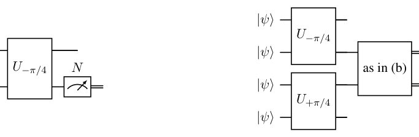
<figcaption class="paper-figure-caption"><b>Fig 1.</b> Figure 1: Implementations of the four tests considered in this work. Each wire represents an m-mode Hilbert space. (a) For fermions, a two-copy Bell measurement is performed and its classical outcome is post-processed, see [3, 5] for details. (b) For mean-zero bosons, one may realize the two-copy observable by a π/2 phase shift, a balanced beam splitter, and measuring the particle-number difference [6]. (c) For coherent states, a balanced beam splitter is applied and one output is tested to be in the vacuum state. (d) For general bosonic Gaussian states, two balanced beam-splitters produce two mean-zero outputs, to which the test from panel (b) is applied.</figcaption>
</figure>
</div>

<p><strong>Summary.</strong> This paper develops a theoretical method to test if a quantum state is Gaussian (bosonic or fermionic) using only a constant number of copies, a significant improvement over previous scaling results. The proof leverages advanced techniques involving gradient flow analysis and spectral gap estimates on multi-copy operators. It establishes a robust diagnostic tool for characterizing quantum states in quantum information theory.</p>
<p><strong>Why it may be interesting.</strong> This work provides fundamental theoretical tools for certifying quantum states, which is crucial for quantum computation and quantum communication protocols that rely on specific state properties.</p>
<details>
<summary>Detailed structure</summary>
<p><strong>Main problem.</strong> The paper addresses the problem of determining whether a given quantum state is a bosonic or fermionic Gaussian state, or if it has a bounded overlap with the set of Gaussian states.</p>
<p><strong>Main result.</strong> The key advancement is proving that a constant number of copies of the state is sufficient to perform this test, overcoming previous results that required the number of copies to scale with the system size (number of modes).</p>
<p><strong>Method.</strong> The results are derived by analyzing the symmetries of identical copies of Gaussian states and by bounding the distance to the set of Gaussian states using gradient flow techniques and spectral bounds related to random walks.</p>
<p><strong>Model / system.</strong> The study focuses on bosonic and fermionic Gaussian quantum states, which are central objects in quantum physics and quantum information processing. The analysis involves multi-copy measurements on these states.</p>
<p><strong>Key observables.</strong> Acceptance probability $p(\psi) = \langle\psi|\otimes 2 P |\psi
angle\otimes 2$, and the fidelity $F_G(\psi)$ to the set of Gaussian states.</p>
<p><strong>Important parameters / regimes.</strong> The number of copies required for the test, which is shown to be constant, and the spectral gap $\alpha$ of an associated operator $S$.</p>
<p><strong>Assumptions / limitations.</strong> The robustness theorems rely on bounding the spectral gap of a specific three-copy operator $S$, relating the acceptance probability to the fidelity.</p>
<p><strong>Figures summary.</strong> Figure 1 illustrates the physical implementations of the four distinct tests developed for Gaussianity.</p>
<p><strong>Paper structure.</strong> The paper develops the theoretical framework by first establishing the general test using $O(1)$ copies (Theorem 1.1). It then rigorously proves the robustness of this test by analyzing the gradient flow of the acceptance probability, linking it to the spectral gap of the three-copy operator $S$ (Theorem 3.4). Finally, it applies these general results to specific cases like fermionic and bosonic Gaussianity.</p>
</details>
<details>
<summary>Abstract</summary>
<p>Bosonic and fermionic Gaussian quantum states are families of quantum states that play a central role in quantum physics and quantum information processing. We study the problem of testing whether a given state is either Gaussian, or has bounded overlap with any Gaussian state. Previous analyses of this testing problem led to tests that require a number of copies of the state that scales with the number of modes (the system size). In this work we show that a constant number of copies of the state suffices. We derive these results based on the symmetries of identical copies of Gaussian states, and by bounding the distance to the set of Gaussian states through a gradient flow and a spectral bound studied previously for the Kac random walk on a sphere.</p>
</details>
<p><sub><a href="#top">↑ back to top</a></sub></p>

<p><a id="paper-2610.04996"></a></p>
<h3 id="the-power-of-time-reversal-in-hamiltonian-property-testing"><a href="http://arxiv.org/abs/2610.04996v1">The power of time reversal in Hamiltonian property testing</a></h3>
<p><strong>Authors:</strong> Richard R. Allen, Matthias C. Caro, Yanlin Chen, Tom Gur, Angus Lowe<br>
<strong>Type:</strong> theory · <strong>Category:</strong> quantum information and computing · <strong>PDF:</strong> <a href="https://arxiv.org/pdf/2610.04996v1">https://arxiv.org/pdf/2610.04996v1</a><br>
<strong>Analysis basis:</strong> full PDF text, analyzed in chunks
<strong>Topic relevance:</strong> <code>quantum measurements</code> <strong>2/5</strong></p>
<div class="figure-strip-hint">↔ Scroll figures horizontally</div>
<div class="paper-figures-scroll">
<figure class="paper-figure-card">
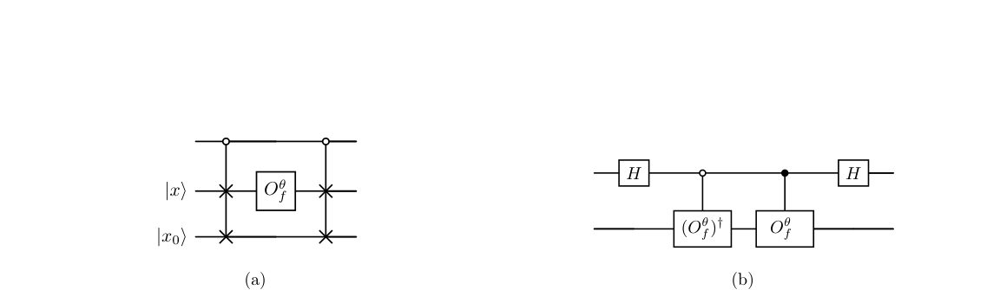
<figcaption class="paper-figure-caption"><b>Fig 1.</b> Figure 1: (a) Circuit implementing controlled-Oθ f operation. The first register is an ancilla qubit. (b) Circuit implementing the signal processing operator W. Here, H is the Hadamard operation.</figcaption>
</figure>
</div>

<p><strong>Summary.</strong> This paper proves that the ability to reverse time (i.e., access inverse unitary operations) is a necessary resource for achieving optimal quantum speedups in continuous-time tasks like Hamiltonian property testing. Using a new Fourier-analytic technique, the authors establish lower bounds that demonstrate a clear separation in required evolution time when time reversal is unavailable. This work fundamentally characterizes time reversal as a key resource governing quantum measurement precision.</p>
<p><strong>Why it may be interesting.</strong> The rigorous establishment of time reversal as a fundamental resource governing quantum measurement precision and algorithm robustness provides deep theoretical insights applicable to open quantum systems and time-dependent dynamics.</p>
<details>
<summary>Detailed structure</summary>
<p><strong>Main problem.</strong> The paper investigates the fundamental necessity of time reversal (inverse unitary operations) for achieving optimal scaling in continuous-time quantum tasks like Hamiltonian property testing.</p>
<p><strong>Main result.</strong> It rigorously proves that time reversal is a necessary resource, establishing lower bounds for evolution time that are significantly worse without the ability to reverse time.</p>
<p><strong>Method.</strong> The authors develop a novel Fourier-analytic approach to quantum lower bounds in continuous time, extending techniques from discrete query models.</p>
<p><strong>Model / system.</strong> The study analyzes quantum evolution governed by an unknown Hamiltonian H in a continuous-time setting, applied to problems like Hamiltonian certification and locality testing.</p>
<p><strong>Key observables.</strong> Evolution time (T), error metric (ranging from average-case to worst-case), and the distinguishability of Hamiltonians.</p>
<p><strong>Important parameters / regimes.</strong> Precision ($\epsilon$), Hilbert space dimension ($d$), and the structure of the Hamiltonian (e.g., local vs. global).</p>
<p><strong>Assumptions / limitations.</strong> The analysis assumes black-box access to time evolution under the unknown Hamiltonian and relies on establishing separations across a continuous family of error metrics.</p>
<p><strong>Paper structure.</strong> The work progresses by establishing lower bounds for Hamiltonian certification and locality testing, showing separations between time-reversible and non-time-reversible protocols. It then extends these techniques to provide alternative proofs for the necessity of inverses in amplitude amplification and unstructured search.</p>
</details>
<details>
<summary>Abstract</summary>
<p>Quantum algorithms enable Heisenberg-limited scaling across many tasks in sensing and learning, achieving precision $\varepsilon$ using $O(1/\varepsilon)$ total evolution time. However, in Hamiltonian property testing, the best known algorithms have $O(1/\varepsilon^2)$ total evolution time, unless it is possible to $\textit{reverse}$ the flow of time under the Hamiltonian. In this work, we prove that time reversal is necessary to close this gap. We establish evolution time lower bounds for Hamiltonian certification and locality testing, for a continuous family of error metrics ranging from average- to worst-case. We also prove matching upper bounds for Hamiltonian certification in all cases, both with and without time reversal, showing that the advantage from time reversal persists. Our results follow from a new Fourier-analytic approach to quantum lower bounds in continuous time, which is sensitive to time reversal and applicable beyond Hamiltonian property testing. This gives an alternative proof that inverses are required for amplitude amplification and estimation, improving the lower bounds of Tang and Wright and extending to fractional queries. We also show that, for unstructured search, uncertainty in the phase of the oracle destroys the quantum speedup without inverse queries, even when the oracle is fixed and coherent. Our work rigorously establishes time reversal as a resource governing both the precision of quantum measurement and the robustness of quantum algorithms.</p>
</details>
<p><sub><a href="#top">↑ back to top</a></sub></p>

<p><a id="paper-2610.06803"></a></p>
<h3 id="tight-bounds-for-hybrid-quantum-classical-query-algorithms"><a href="http://arxiv.org/abs/2610.06803v1">Tight bounds for hybrid quantum-classical query algorithms</a></h3>
<p><strong>Authors:</strong> Andris Ambainis, András Gilyén, Martins Kokainis<br>
<strong>Type:</strong> theory · <strong>Category:</strong> quantum information and computing · <strong>PDF:</strong> <a href="https://arxiv.org/pdf/2610.06803v1">https://arxiv.org/pdf/2610.06803v1</a><br>
<strong>Analysis basis:</strong> full PDF text, analyzed in chunks
<strong>Topic relevance:</strong> <code>quantum measurements</code> <strong>2/5</strong></p>
<div class="figure-strip-hint">↔ Scroll figures horizontally</div>
<div class="paper-figures-scroll">
<figure class="paper-figure-card">
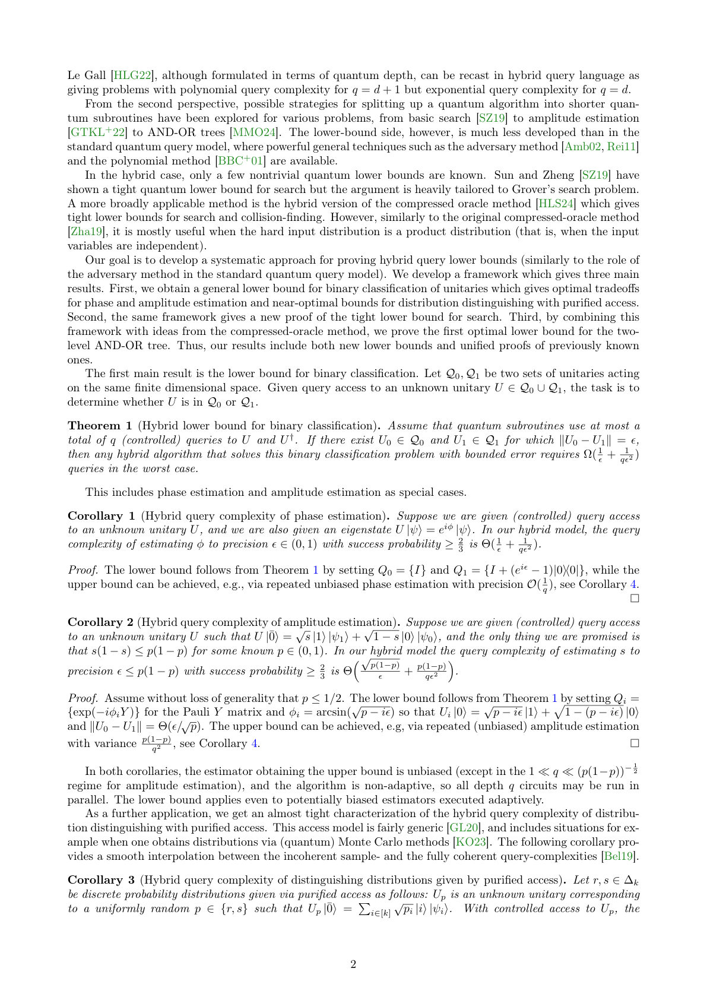
<figcaption class="paper-figure-caption"><b>Fig 1.</b> Low-resolution page preview, page 2</figcaption>
</figure>
<figure class="paper-figure-card">
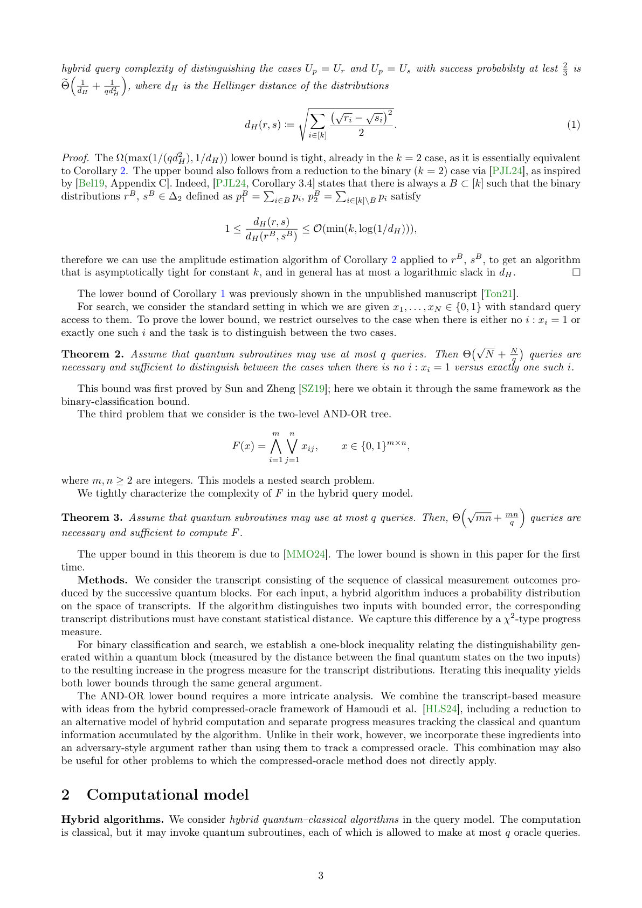
<figcaption class="paper-figure-caption"><b>Fig 2.</b> Low-resolution page preview, page 3</figcaption>
</figure>
<figure class="paper-figure-card">
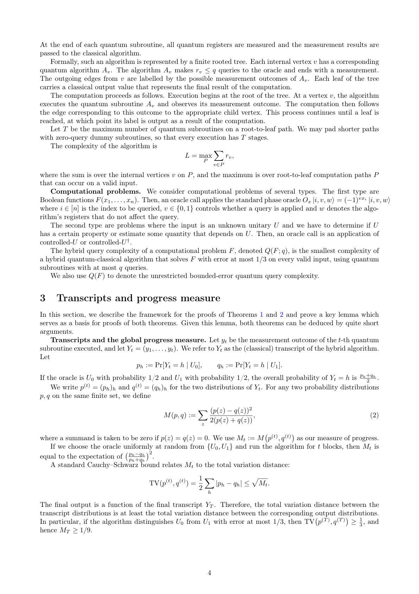
<figcaption class="paper-figure-caption"><b>Fig 3.</b> Low-resolution page preview, page 4</figcaption>
</figure>
<figure class="paper-figure-card">
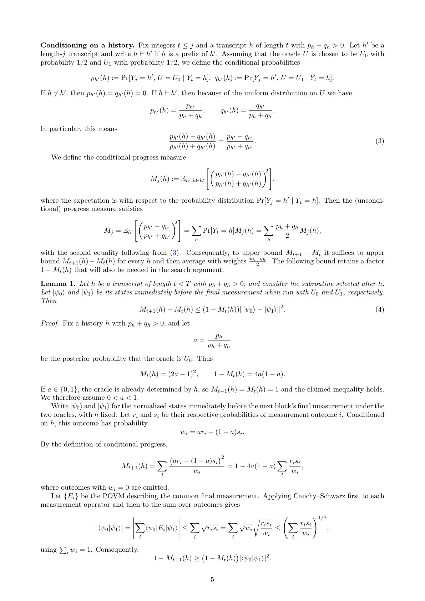
<figcaption class="paper-figure-caption"><b>Fig 4.</b> Low-resolution page preview, page 5</figcaption>
</figure>
<figure class="paper-figure-card">
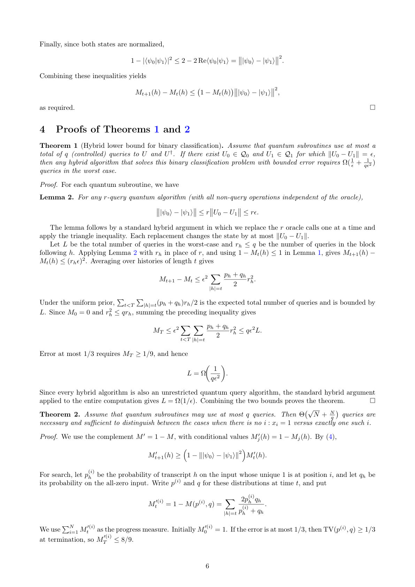
<figcaption class="paper-figure-caption"><b>Fig 5.</b> Low-resolution page preview, page 6</figcaption>
</figure>
</div>

<p><strong>Summary.</strong> This paper rigorously analyzes the query complexity of hybrid quantum-classical algorithms by developing systematic lower-bounding techniques. It proves tight bounds for fundamental problems like phase estimation and search within this model. The work is significant for establishing the theoretical limits of quantum computation when measurements force classical processing between quantum steps.</p>
<p><strong>Why it may be interesting.</strong> This work provides rigorous, systematic tools for establishing quantum lower bounds in a model that bridges quantum computation with classical information processing, which is highly relevant for understanding practical quantum advantage.</p>
<details>
<summary>Detailed structure</summary>
<p><strong>Main problem.</strong> The paper studies the query complexity of hybrid quantum-classical algorithms, where computation is broken into short quantum subroutines separated by classical measurements.</p>
<p><strong>Main result.</strong> They establish tight, optimal upper and lower bounds for several problems, including phase estimation, amplitude estimation, search, and the AND-OR tree, in this hybrid model.</p>
<p><strong>Method.</strong> The authors develop systematic frameworks for proving lower bounds by analyzing probability distributions over measurement transcripts and bounding a 'progress measure' that quantifies distinguishability between input states.</p>
<p><strong>Model / system.</strong> The model is the hybrid quantum-classical query model, where quantum computation is restricted to subroutines making at most $q$ oracle queries, followed by measurement and classical processing.</p>
<p><strong>Key observables.</strong> The primary observables are the required number of queries, the target precision ($\epsilon$), and the statistical distance (e.g., Hellinger distance) between distributions.</p>
<p><strong>Important parameters / regimes.</strong> Key parameters include the maximum queries per block ($q$), the search size ($N$), and the dimensions of the AND-OR tree ($m, n$).</p>
<p><strong>Assumptions / limitations.</strong> The lower bounds are proven to be optimal up to a constant factor for all $q \ge 1$. The analysis relies on bounding progress measures derived from measurement transcripts.</p>
<p><strong>Paper structure.</strong> The paper introduces the hybrid query model, develops a general framework using progress measures for lower bounds, and then applies this framework to derive specific bounds for phase estimation, amplitude estimation, search, and the AND-OR tree.</p>
</details>
<details>
<summary>Abstract</summary>
<p>We study hybrid quantum-classical algorithms in the query model. The computation consists of quantum subroutines that make at most $q$ oracle queries; between subroutines, all qubits are measured and discarded. We prove matching upper and lower bounds for several problems in this model:   (i) (Unbiased) Phase estimation up to a precision $ε$ requires $Θ(\frac{1}{q ε^2})$ queries;   (ii) (Unbiased) Amplitude estimation up to a precision $ε$ requires $Θ(\frac{p(1-p)}{q ε^2})$ queries;   (iii) Search among $N$ items requires $Θ(\frac{N}{q})$ queries;   (iv) Two level AND-OR tree (AND of $m$ ORs, with $n$ inputs to each OR) requires $Θ(\frac{nm}{q})$ queries.   All of these bounds are optimal up to a constant factor, for all $q$ from 1, corresponding to the classical complexity, to $Q(f)$, the unrestricted quantum query complexity of the respective problem. We also derive a hybrid lower bound for distinguishing two distributions specified by a state-preparation unitary; this bound is tight up to a logarithmic factor.   Besides specific lower bounds, an important contribution is developing methods for proving lower bounds on hybrid quantum algorithms (which have been very ad-hoc up to now). The first two bounds follow from a common framework: we analyze probability distributions over measurement transcripts and bound a progress measure that captures their distinguishability. The AND-OR bound requires a more delicate argument, combining two progress measures that track the information available to the algorithm classically and in quantum form, respectively.</p>
</details>
<p><sub><a href="#top">↑ back to top</a></sub></p>

<p><a id="paper-2610.06721"></a></p>
<h3 id="tight-query-lower-bounds-for-quantum-sampling-with-an-application-to-certified-randomness"><a href="http://arxiv.org/abs/2610.06721v1">Tight Query Lower Bounds for Quantum Sampling, with an Application to Certified Randomness</a></h3>
<p><strong>Authors:</strong> Keshav Bhateja, Mehdi Esmaili, Atul Mantri<br>
<strong>Type:</strong> theory · <strong>Category:</strong> quantum information and computing · <strong>PDF:</strong> <a href="https://arxiv.org/pdf/2610.06721v1">https://arxiv.org/pdf/2610.06721v1</a><br>
<strong>Analysis basis:</strong> full PDF text, analyzed in chunks
<strong>Topic relevance:</strong> <code>quantum measurements</code> <strong>2/5</strong></p>
<div class="figure-strip-hint">↔ Scroll figures horizontally</div>
<div class="paper-figures-scroll">
<figure class="paper-figure-card">
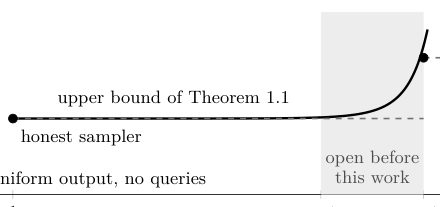
<figcaption class="paper-figure-caption"><b>Fig 1.</b> Figure 1: Expected scores for a Haar-random state as a function of the number of queries, drawn schematically on a logarithmic scale. The solid curve illustrates the scaling form of the upper bound of Theorem 1.1, and the dashed segments mark the scores of the honest sampler, 2N/(N + 1) ≈2 with one query, and of the squaring algorithm of part 3 of Theorem 1.1, 3 −o(1) with O(N1/3) queries; these are lower bounds on the best score, which is not determined beyond N1/3 queries. No algorithm exceeds 2 + o(1) with o(N1/3) queries; at N1/4 queries, where the previous lower bound stopped, the upper bound is within O(N−1/8) of the ideal score, and the shaded range between N1/4 and N1/3 was left...</figcaption>
</figure>
<figure class="paper-figure-card">
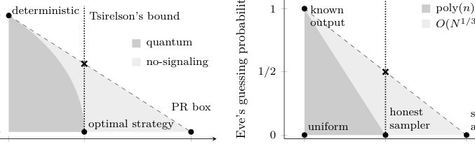
<figcaption class="paper-figure-caption"><b>Fig 2.</b> Figure 2: Two certification pictures, drawn schematically. (a) In the CHSH game, quantum strategies win with probability at most cos2(π/8) [Cir80], and for each winning probability Eve’s probability of guessing one party’s output bit, conditioned on the public inputs and her quantum register, is at most the curve shown, which reaches 1/2 at Tsirelson’s bound. This follows from the local-output bound of [PAM+10, eq. (6)] by conditioning on Eve’s measurement outcome and using concavity. Mixing a deterministic strategy with the PR box [PR94], a hypothetical device that respects no-signaling and wins with certainty, gives the dashed segment, which meets Tsirelson’s bound at a guessing...</figcaption>
</figure>
<figure class="paper-figure-card">
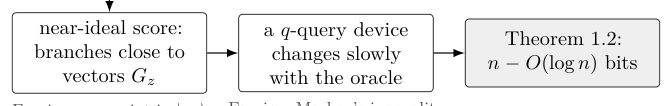
<figcaption class="paper-figure-caption"><b>Fig 3.</b> Figure 3: The structure of the arguments of Section 2. Both lower bounds follow the top row, and both randomness theorems follow the bottom row, which starts from the terms that the proof of the score bound discards. The notes below the boxes indicate how each step is carried out for Fourier sampling and for Haar-random states.</figcaption>
</figure>
</div>

<p><strong>Summary.</strong> This paper develops lower bounds for quantum sampling by analyzing the Linear Cross-Entropy Benchmark (XEB) score. It proves that achieving a constant advantage over the ideal score requires a super-polynomial number of queries, specifically $\Omega(N^{1/3})$. This work provides a strong theoretical link between measurement performance and the amount of certified randomness extractable from a quantum device.</p>
<p><strong>Why it may be interesting.</strong> While focused on complexity theory, the rigorous quantification of certified randomness from limited quantum measurements is fundamental to understanding the practical limits of quantum advantage demonstrations.</p>
<details>
<summary>Detailed structure</summary>
<p><strong>Main problem.</strong> The paper investigates what a high Linear Cross-Entropy Benchmark (XEB) score certifies about an untrusted quantum device performing random circuit sampling.</p>
<p><strong>Main result.</strong> It establishes that exceeding the ideal score by a constant requires $\Omega(N^{1/3})$ queries for Haar and Fourier ensembles, and that near-ideal scores certify $n - O(\log n)$ bits of smooth min-entropy.</p>
<p><strong>Method.</strong> The analysis employs quantum query models, utilizing progress measures (like norms of coherent amplitudes or expansions in orthogonal polynomials) to derive lower bounds on query complexity.</p>
<p><strong>Model / system.</strong> The study is set in the quantum query model, analyzing random circuit sampling using oracles drawn from the Haar ensemble or the Fourier ensemble.</p>
<p><strong>Key observables.</strong> The XEB score, smooth min-entropy, and the progress measure quantifying the excess over the ideal score.</p>
<p><strong>Important parameters / regimes.</strong> The number of outcomes $N$, the number of queries $q$, and the constant advantage $\epsilon$ over the ideal score.</p>
<p><strong>Assumptions / limitations.</strong> The analysis relies on the query model framework and the ability to construct progress measures that are zero for the honest sampler.</p>
<p><strong>Figures summary.</strong> Figure 1 illustrates the expected scores for Haar-random states versus the number of queries, comparing the honest sampler to the squaring algorithm. Table 1 compares query complexity bounds for achieving specific score advantages.</p>
<p><strong>Paper structure.</strong> The paper develops lower bounds by analyzing progress measures related to the excess score, first for the Haar and Fourier ensembles, and then applies these bounds to quantify the certified randomness achievable.</p>
</details>
<details>
<summary>Abstract</summary>
<p>Random circuit sampling experiments, the leading demonstrations of quantum computational advantage, are tested with the linear cross-entropy benchmark (XEB), which scores outcomes by their ideal probabilities. We study what a high XEB score certifies about an untrusted quantum device. In the quantum query model, we show that the honest sampler's ideal score acts as a Tsirelson bound for efficient devices and certified randomness. First, exceeding the ideal score by a constant requires $Ω(N^{1/3})$ queries for the Haar and Fourier oracle ensembles with $N$ outcomes, and this bound is tight; this proves an earlier conjecture for Haar-random states and extends it to Fourier sampling. Second, for Fourier sampling and for Haar-random states accessed through the canonical state-preparation oracle, the $n$-bit output of a device that makes polynomially many queries and scores within $o(1)$ of the ideal score has $n-O(\log n)$ bits of smooth min-entropy, even against an adversary who is entangled with the device and later learns the oracle; this is nearly optimal. As a corollary, sampling the collision distribution, which is proportional to the square of the ideal distribution, has query complexity $Θ(N^{1/3})$, and a coherent version of the same algorithm approximately prepares quantum Hadamard products of states with uniform amplitude magnitudes. Both lower bounds rest on progress measures that bound the excess over the ideal score and increase only slightly with each query. For Fourier sampling the measure is the norm of the coherent amplitudes for removing pairs in a purification of the random function, combining the polynomial method with the compressed oracle technique; for Haar-random states it is the square root of the average level in an expansion in Dirichlet orthogonal polynomials, controlled by an exact identity for the effect of one observation.</p>
</details>
<p><sub><a href="#top">↑ back to top</a></sub></p>

<p><a id="paper-2610.06231"></a></p>
<h3 id="unitary-rql-equals-rql"><a href="http://arxiv.org/abs/2610.06231v1">Unitary RQL Equals RQL</a></h3>
<p><strong>Authors:</strong> Quinten Tupker<br>
<strong>Type:</strong> theory · <strong>Category:</strong> quantum information and computing · <strong>PDF:</strong> <a href="https://arxiv.org/pdf/2610.06231v1">https://arxiv.org/pdf/2610.06231v1</a><br>
<strong>Analysis basis:</strong> full PDF text, analyzed in chunks
<strong>Topic relevance:</strong> <code>quantum measurements</code> <strong>2/5</strong></p>
<div class="figure-strip-hint">↔ Scroll figures horizontally</div>
<div class="paper-figures-scroll">
<figure class="paper-figure-card">
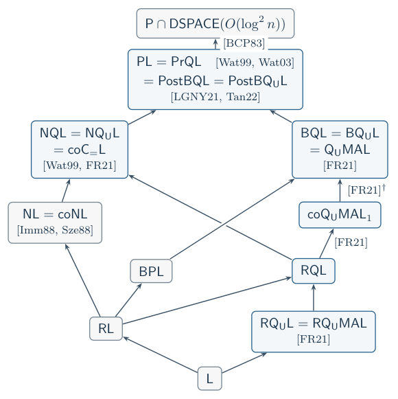
<figcaption class="paper-figure-caption"><b>Fig 1.</b> Figure 1: Ordinary logarithmic space. An arrow A →B means A ⊆B, not necessarily strict. Unlabelled arrows follow from the definitions and displayed equalities; crossing lines are not junctions. Transitive edges and some classes are omitted. The subscript U means unitary until the final measurement. R means bounded error with perfect soundness, N means positive acceptance on yes-instances and zero on no-instances, and PrQL means two-sided unbounded error (often denoted QL). Post allows postselection; C=L is the zero-test class for GapL functions. QUMAL1 has perfect completeness. †: use QUMAL1 ⊆QUMAL = BQL and closure of BQL under complement. We use polynomial-time, logspace-uniform models...</figcaption>
</figure>
<figure class="paper-figure-card">
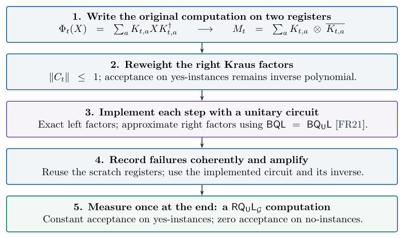
<figcaption class="paper-figure-caption"><b>Fig 2.</b> Figure 2: The direct RQL simulation under the gate assumptions of Theorem 3.1 and its extension in Theorem 3.3. The first two stages describe matrices; the last three implement the simulation in logarithmic space and polynomial time. Exact left Kraus factors preserve perfect soundness throughout, while reweighting and accurate right factors retain acceptance on yes-instances. The use of two-sided measurement elimination is a dependency of the construction. The CM-field theorem first converts the source computation to the standard gate set, then applies this simulation.</figcaption>
</figure>
<figure class="paper-figure-card">
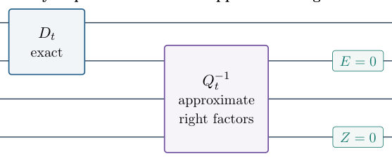
<figcaption class="paper-figure-caption"><b>Fig 3.</b> Figure 3: Keeping the left Kraus factors exact while approximating the right factors. Read both diagrams from left to right. Panel (a) is an algebraic factorization: its matrix boxes need not be unitary. Both reference-state weights act on B, and summing over a gives Ct. Panel (b) is a unitary circuit. The exact source circuit Dt writes the Kraus label into E; Qt acts only on B, E, Z and supplies the approximate right factors. Its implemented inverse is exact. In particular, Bt,a = ⟨0E0Z| Q−1 t |aE0Z⟩, so approximation leaves every left factor Kt,a unchanged. The green conditions select the component with zero scratch; they are not intermediate measurements. The full simulation uses the...</figcaption>
</figure>
<figure class="paper-figure-card">
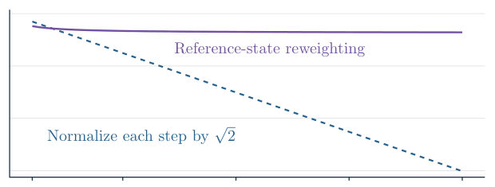
<figcaption class="paper-figure-caption"><b>Fig 4.</b> Figure 4: Reweighting a qubit reset Φ(X) = Tr(X) |0⟩⟨0|. In (a), σ0 = I/2 and σ1 = diag(2 + η, η)/(2κ), where κ = 1 + η. Substitution into the definition of C1 gives the displayed contraction. In (b), the source starts in |0⟩, applies T resets, and accepts |0⟩with certainty. Normalizing each doubled step as M/ √</figcaption>
</figure>
<figure class="paper-figure-card">
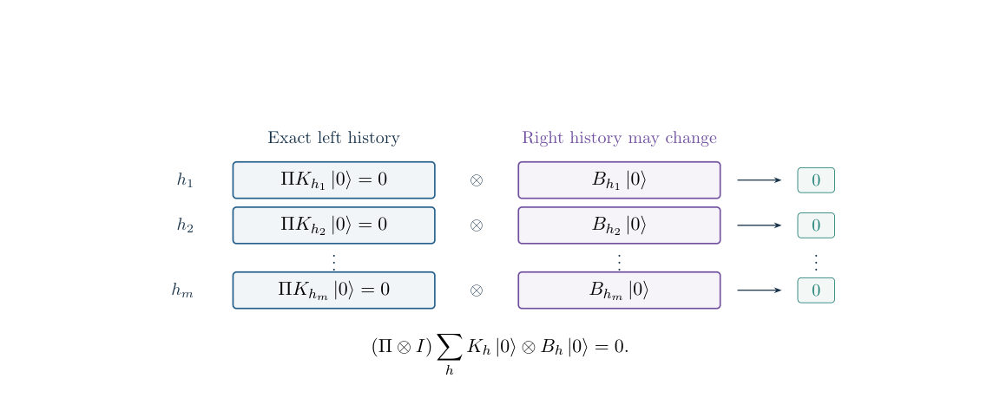
<figcaption class="paper-figure-caption"><b>Fig 5.</b> Figure 5: Perfect soundness holds history by history. The histories are h1, . . . , hm, with Bh = BT,aT · · · B1,a1. Zero original acceptance forces every accepting left vector to vanish. Changing its right factor therefore leaves the whole tensor-product term zero. The final scratch and counter tests select the displayed sum.</figcaption>
</figure>
</div>

<p><strong>Summary.</strong> This paper tackles the theoretical question of whether intermediate measurements are necessary in quantum computation when operating under limited resources like logarithmic space. The authors prove that for standard gate sets, measurements can be eliminated while maintaining computational power, extending known techniques to general channels and quantum verification settings.</p>
<p><strong>Why it may be interesting.</strong> This work provides deep theoretical insights into the resource requirements of quantum computation, particularly concerning the necessity of intermediate measurements, which is fundamental for designing efficient quantum algorithms.</p>
<details>
<summary>Detailed structure</summary>
<p><strong>Main problem.</strong> The central problem is determining if intermediate measurements in quantum computation can be eliminated while preserving computational power, specifically addressing the one-sided error case ($    ext{RQL} =  ext{RQUL}$).</p>
<p><strong>Main result.</strong> The authors prove that $   ext{RQL}<em _Gamma="\Gamma">{\Gamma} =     ext{RQUL}</em>$ for the standard gate set $\Gamma$, preserving polynomial time, logarithmic space, and zero acceptance on no-instances.</p>
<p><strong>Method.</strong> The proof extends the density-matrix doubling method to general channels and utilizes a history-checking construction for quantum verification.</p>
<p><strong>Model / system.</strong> The work analyzes quantum computation models ($ ext{RQL}$, $    ext{RQUL}$) operating in polynomial time with logarithmic space, using gate sets like $\Gamma = \{	ext{H}, 	ext{T}, 	ext{CNOT}\}$ as the underlying computational resource.</p>
<p><strong>Key observables.</strong> Acceptance probability (must be exactly zero on no-instances), computational space ($  ext{O}(\log n)$), and time complexity (polynomial).</p>
<p><strong>Important parameters / regimes.</strong> The error type (two-sided vs. one-sided) and the specific gate set $\Gamma$ or $    ext{G}$ used for the computation.</p>
<p><strong>Assumptions / limitations.</strong> The proof relies on the established two-sided measurement-elimination theorem and assumes specific conditions on the gate sets (e.g., exact inverses or entries in a fixed CM field).</p>
<p><strong>Figures summary.</strong> Figure 1 summarizes prior complexity results; Figure 2 details the direct simulation process involving reweighting and unitary circuits; Figure 3 illustrates the factorization of the simulation into algebraic and unitary components.</p>
<p><strong>Paper structure.</strong> The paper progresses by first establishing the core measurement elimination result ($  ext{RQL} =  ext{RQUL}$), then detailing the simulation construction using reweighting and unitary circuits, and finally extending these results to broader gate sets and quantum verification settings.</p>
</details>
<details>
<summary>Abstract</summary>
<p>Intermediate measurements let quantum computations discard information and reuse their workspace. Deferring all measurements can require storing their entire history, which need not preserve logarithmic space. Fefferman and Remscrim proved that measurements can nevertheless be eliminated with two-sided bounded error, and asked whether the same holds with one-sided error [FR21]. We prove RQLΓ = RQULΓ for the standard gate set Γ = {H, T, CNOT}, preserving polynomial time, logarithmic space, and exactly zero acceptance on no-instances. Our proof extends the density-matrix doubling method of Girish, Raz and Zhan [ GRZ21 ] to general channels, including resets and classical memory. We also prove measurement elimination for broader finite gate sets with exact inverses, including suitable gates with transcendental entries, and establish gate-set independence for a specified family of algebraic gate sets. A separate history-checking construction proves QMAL1,G = QUMAL1,G under explicit gate assumptions: measurements can also be eliminated from logarithmic-space quantum verification while preserving perfect completeness</p>
</details>
<p><sub><a href="#top">↑ back to top</a></sub></p>

<p><a id="paper-2610.06754"></a></p>
<h3 id="finite-bath-projected-ensembles-in-dual-unitary-circuits"><a href="http://arxiv.org/abs/2610.06754v1">Finite-bath projected ensembles in dual-unitary circuits</a></h3>
<p><strong>Authors:</strong> Rahul Arvind, Nicholas Hunter-Jones<br>
<strong>Type:</strong> theory · <strong>Category:</strong> statistical mechanics · <strong>PDF:</strong> <a href="https://arxiv.org/pdf/2610.06754v1">https://arxiv.org/pdf/2610.06754v1</a><br>
<strong>Analysis basis:</strong> full PDF text, analyzed in chunks
<strong>Topic relevance:</strong> <code>Keldysh / 2PI / non-Gaussian methods</code> <strong>1/5</strong> · <code>correlated / nonlocal dissipation</code> <strong>1/5</strong> · <code>driven-dissipative phase transition</code> <strong>1/5</strong> · <code>methods for driven-dissipative</code> <strong>1/5</strong> · <code>non-equilibrium universality</code> <strong>1/5</strong> · <code>quantum measurements</code> <strong>1/5</strong> · <code>scars &amp; prethermalization</code> <strong>1/5</strong></p>
<div class="figure-strip-hint">↔ Scroll figures horizontally</div>
<div class="paper-figures-scroll">
<figure class="paper-figure-card">
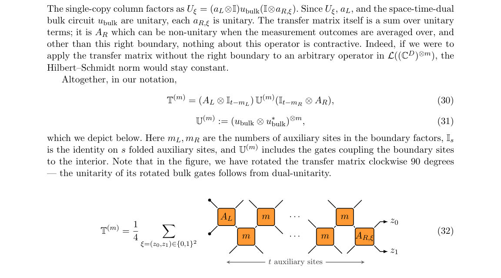
<figcaption class="paper-figure-caption"><b>Fig 1.</b> Figure 1: The m-fold transfer matrix with space and time flipped. Each folded site has local dimension 22m</figcaption>
</figure>
<figure class="paper-figure-card">
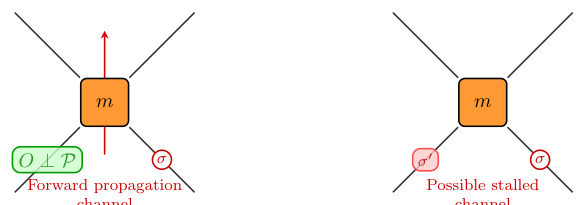
<figcaption class="paper-figure-caption"><b>Fig 2.</b> Figure 3: Local propagation channels in the checkerboard picture. The labels on the legs distinguish a component orthogonal to the local permutation span from a permutation component. The orthogonal defect weights used in the proof are defined by the projectors Py.</figcaption>
</figure>
<figure class="paper-figure-card">
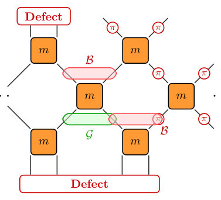
<figcaption class="paper-figure-caption"><b>Fig 3.</b> Figure 4: The figure shows how backflow of defects may occur microscopically in our setup. The idea is essentially that if we have two B sector defects in a row, then if the permutations align just right, the defect can flow backwards. Since design formation requires worst-case contraction of everything outside the globally transparent sector, this is a genuine problem. Notice that the second B sector defect must come from a G →B transition.</figcaption>
</figure>
<figure class="paper-figure-card">
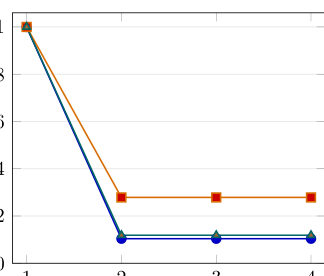
<figcaption class="paper-figure-caption"><b>Fig 4.</b> Figure 5: We consider dual unitary gates of the form uθ = exp  −i( π</figcaption>
</figure>
<figure class="paper-figure-card">
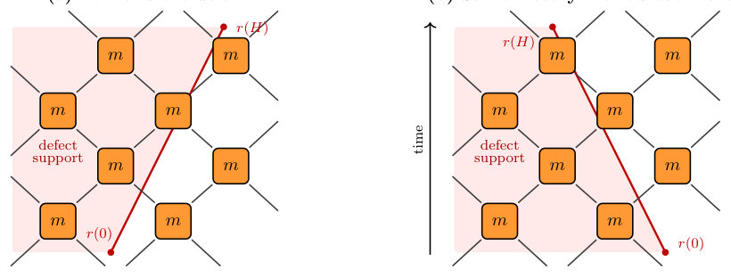
<figcaption class="paper-figure-caption"><b>Fig 5.</b> Figure 6: Finite-width states with the right correlations can lead to long backflows, as illustrated in the figure. A fast moving defect for one dual unitary moves backwards when considering the Hermitian conjugate circuit. This does not reverse the absorbing process.</figcaption>
</figure>
</div>

<p><strong>Summary.</strong> This paper analyzes the randomness generated in quantum systems evolving via dual-unitary circuits when measurements are performed on a portion of the system. It rigorously establishes that the projected state ensemble approximates a quantum state k-design using only a bath of polynomial size relative to k. The methodology introduces a defect-transport picture to quantify this convergence rate, which is crucial for understanding finite-size effects in quantum thermalization.</p>
<p><strong>Why it may be interesting.</strong> This work provides a powerful, quantitative tool for understanding how local unitary dynamics generate complex, highly mixed states (like k-designs) in finite quantum systems, bridging quantum information theory with statistical physics concepts of thermalization.</p>
<details>
<summary>Detailed structure</summary>
<p><strong>Main problem.</strong> The paper investigates the rate of convergence of projected quantum state ensembles, generated by dual-unitary circuits, towards a quantum state k-design at finite bath sizes.</p>
<p><strong>Main result.</strong> It rigorously proves that under specific assumptions, a bath of polynomial size suffices to approximate k-designs, establishing a finite-size convergence rate.</p>
<p><strong>Method.</strong> The authors develop a microscopic transport interpretation of emergent randomness, reformulating the convergence problem using a transfer matrix approach in a space-time flipped picture.</p>
<p><strong>Model / system.</strong> The model involves quantum evolution governed by dual-unitary brickwork circuits, partitioning the system into an unmeasured subsystem (A) and a measured bath subsystem (B).</p>
<p><strong>Key observables.</strong> The primary observable is the projected ensemble's k-th moment, $
ho^{(k)}_{  ext{EA}}$, which is compared against the Haar random ensemble's k-moment.</p>
<p><strong>Important parameters / regimes.</strong> The key parameters include the target moment order $k$ and the finite bath size $N_B$, with the result showing scaling as $ ext{poly}(k)$.</p>
<p><strong>Assumptions / limitations.</strong> The proof relies on three quantitative assumptions: local permutation mixing, a bound on recurrent backward motion, and contraction at the measured boundary.</p>
<p><strong>Figures summary.</strong> Figures illustrate the structure of the k-fold dual-unitary brickwork circuit and the diagrammatic representation of the transfer matrix used to track moment evolution.</p>
<p><strong>Paper structure.</strong> The paper builds from defining dual-unitarity and folded circuits, to developing the defect-transport mechanism for convergence, and finally providing rigorous finite-replica treatments for normalization.</p>
</details>
<details>
<summary>Abstract</summary>
<p>We study the emergent randomness in projected ensembles generated by dual-unitary circuits. Specifically, we consider evolution by solvable dual-unitary brickwork circuits followed by measurements on part of the system, which induce an ensemble of states on the unmeasured subsystem. Previous work has established that this projected ensemble of states forms a quantum state design in the limit where the bath size is large, but the rate of convergence at finite bath size has not been rigorously established. Under three inverse-polynomial assumptions, local permutation mixing, a bound on recurrent backward motion, and contraction at the measured boundary, we fill this gap and prove that a bath of polynomial size suffices to form approximate $k$-designs. In establishing our results, we develop a microscopic transport interpretation of emergent randomness in the projected ensemble, in which deviations from local permutation operators appear as defects, and make connections with the theory of quantum walks.</p>
</details>
<p><sub><a href="#top">↑ back to top</a></sub></p>

<p><a id="paper-2610.06249"></a></p>
<h3 id="hydrodynamics-of-perceptual-matter-from-neural-representations-to-collective-motion"><a href="http://arxiv.org/abs/2610.06249v1">Hydrodynamics of perceptual matter: from neural representations to collective motion</a></h3>
<p><strong>Authors:</strong> Mohammad Salahshour<br>
<strong>Type:</strong> theory · <strong>Category:</strong> statistical mechanics · <strong>PDF:</strong> <a href="https://arxiv.org/pdf/2610.06249v1">https://arxiv.org/pdf/2610.06249v1</a><br>
<strong>Analysis basis:</strong> full PDF text, analyzed in chunks
<strong>Topic relevance:</strong> <code>Frenkel-Kontorova</code> <strong>1/5</strong> · <code>Keldysh / 2PI / non-Gaussian methods</code> <strong>1/5</strong> · <code>analog quantum simulation</code> <strong>1/5</strong> · <code>correlated / nonlocal dissipation</code> <strong>1/5</strong> · <code>driven-dissipative phase transition</code> <strong>1/5</strong> · <code>methods for driven-dissipative</code> <strong>1/5</strong> · <code>non-equilibrium universality</code> <strong>1/5</strong></p>
<div class="figure-strip-hint">↔ Scroll figures horizontally</div>
<div class="paper-figures-scroll">
<figure class="paper-figure-card">
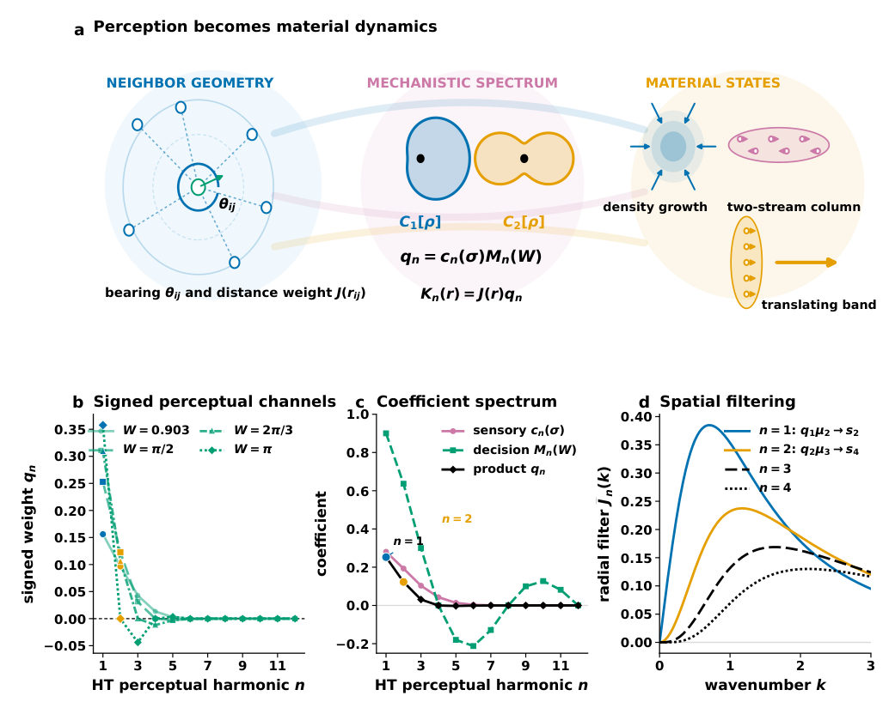
<figcaption class="paper-figure-caption"><b>Fig 1.</b> Fig. 1. From perception to material dynamics. (a), The panorama follows one construction across scales. A focal agent measures neighbor bearings and distances. The resulting HT perceptual channels form the cue fields Cn[ρ]. The continuum develops density growth, a bidirectional column, or a translating band without a heading-alignment torque. The mathematical bridge begins with the mechanistic coefficients qn (Eq. (1)) [16], passes through the particle law and cue convolution in Eqs. (2) and (4), and reaches the kinetic continuum of Eqs. (7) and (8) and its slow density branch, Eq. (15). (b), At fixed sensory-acuity parameter σ = 0.5, the decision width W changes both the magnitude and sign...</figcaption>
</figure>
<figure class="paper-figure-card">
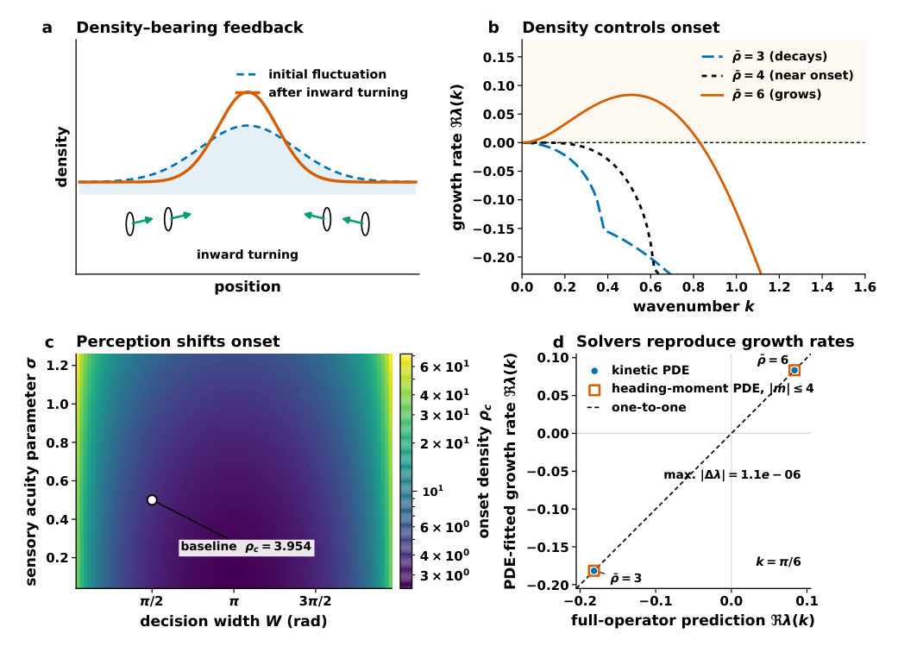
<figcaption class="paper-figure-caption"><b>Fig 2.</b> Fig. 2. Density–bearing feedback sets the onset of organization. (a), A density excess generates the coarse-grained n = 1 bearing cue C1[ρ] through Eq. (4). The resulting torque turns agents inward (Eq. (8)), and self-propulsion carries them into the excess. This feedback enters density evolution through Eq. (15). (b), The leading eigenvalue λ(k) of Eq. (13) gives the growth or decay rate ℜλ(k); positive values grow. Raising ¯ρ from 3 to 6 crosses the onset. (c), Eq. (16) maps the onset density (color) across decision width W (horizontal axis) and sensory-acuity parameter σ (vertical axis). The marked baseline is W = π/2, σ = 0.5, and ρc = 3.954. Larger σ means lower sensory acuity. (d),...</figcaption>
</figure>
<figure class="paper-figure-card">
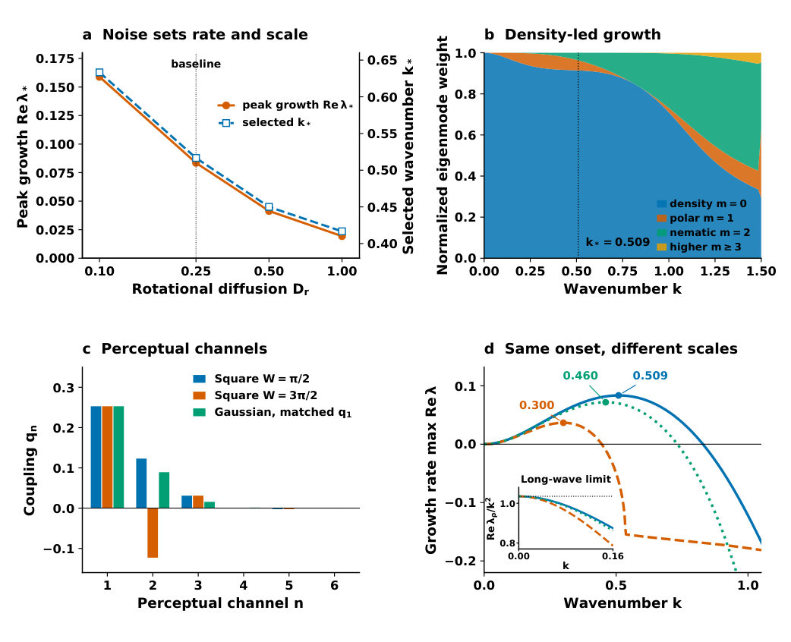
<figcaption class="paper-figure-caption"><b>Fig 3.</b> Fig. 3. The full nonlocal operator selects the initial pattern scale. (a), At ¯ρ = 6, rotational diffusion changes both the peak growth rate and the selected wavenumber predicted by Eq. (13), even though the long-wave threshold (Eq. (16)) is independent of Dr for Dr &gt; 0. (b), At each k, the leading eigenvector of Eq. (13) is resolved in the heading-moment basis defined by Eq. (9). The plotted weights are the squared magnitudes of its components, with the ±m pair combined for m ≥1 and all weights normalized to sum to one. Near the baseline maximum the linear eigenmode is density-led, with smaller polar and nematic components coupled to density through Eq. (10). (c), Complementary square...</figcaption>
</figure>
<figure class="paper-figure-card">
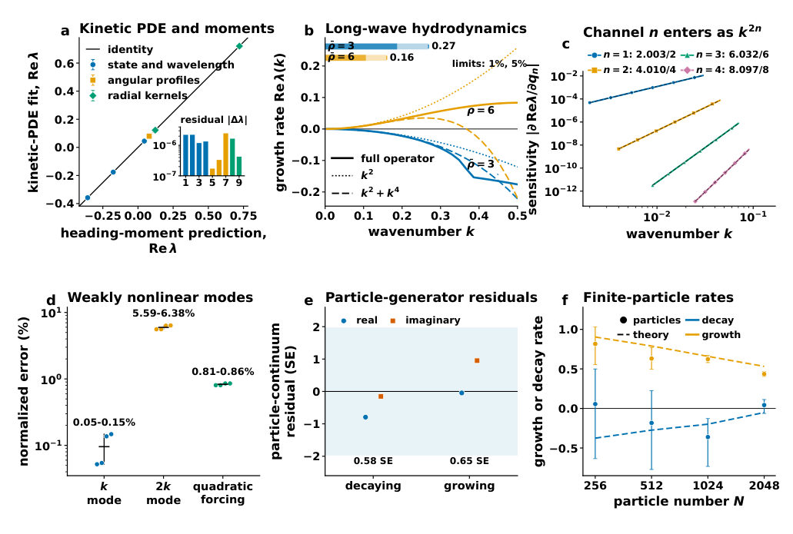
<figcaption class="paper-figure-caption"><b>Fig 4.</b> Fig. 4. Independent comparisons test each reduction at the scale where it is used. (a), Nine growth and decay rates measured from the kinetic PDE (Eqs. (7) and (8)) agree with the heading-moment operator in Eq. (13). The inset resolves the remaining absolute differences. (b), The full density branch of Eq. (13) is compared with the k2 and k2 + k4 forms obtained from Eqs. (14) and (15). Dark and pale bars give the contiguous 1% and 5% validity intervals, measured contiguously from the smallest sampled k, showing that the gradient expansion is controlled only at long wavelengths. (c), At qn = 0, the absolute left–right eigenvalue sensitivities |∂ℜλ/∂qn| recover the k2n exponents in Eq. (17);...</figcaption>
</figure>
<figure class="paper-figure-card">
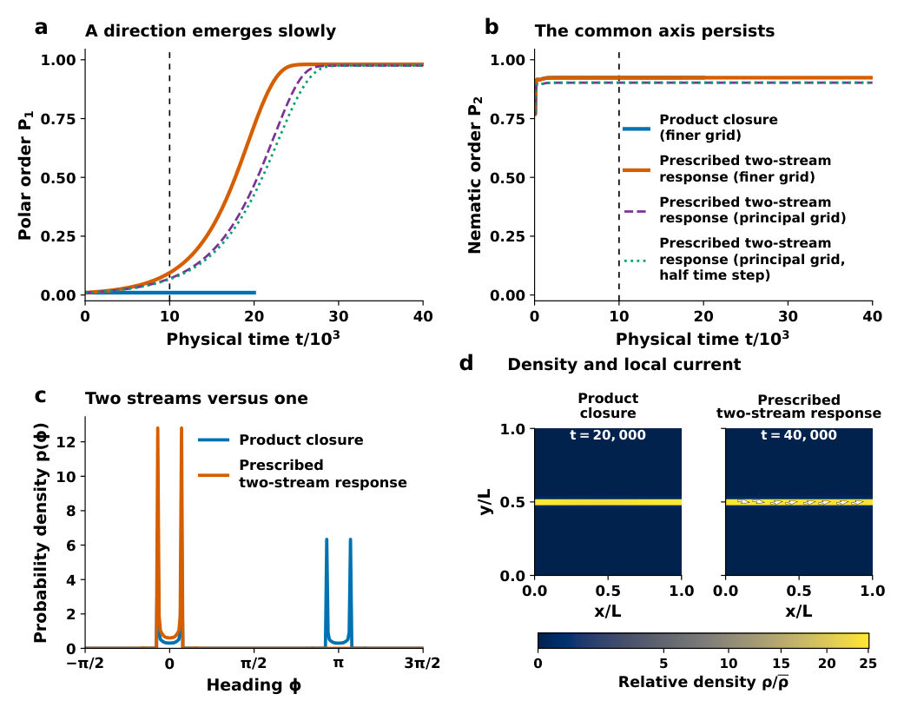
<figcaption class="paper-figure-caption"><b>Fig 5.</b> Fig. 5. Delayed polar flow in an attractive continuum column. “Product closure” denotes the one-particle dynamics in Eqs. (7) and (8), which treat neighboring agents as statistically independent. “Prescribed two-stream response” denotes the two-stream population response in Eq. (20), motivated by omitted pair information rather than derived from it, with prescribed rate apair = 0.035 in rescaled time. All panels use distance-decaying attraction with ℓ/L = 1/16. (a,b), Global polar and nematic order (Eq. (19)): the prescribed response selects one direction while preserving the common axis; the product closure leaves nearly balanced counterpropagating populations. Time is in physical HT...</figcaption>
</figure>
</div>

<p><strong>Summary.</strong> This paper develops a comprehensive hydrodynamic theory for active matter, treating collective motion as 'perceptual matter' derived from neural models. It successfully bridges the gap between individual agent perception and macroscopic continuum behavior by deriving stability criteria and transport equations. The work is significant for showing how specific sensory and decision mechanisms dictate collective instabilities and flow patterns.</p>
<p><strong>Why it may be interesting.</strong> While focused on active matter, the rigorous derivation of macroscopic equations from underlying microscopic rules, coupled with stability analysis, shares methodological parallels with non-equilibrium statistical mechanics used in quantum many-body systems.</p>
<details>
<summary>Detailed structure</summary>
<p><strong>Main problem.</strong> To derive a nonlocal kinetic and hydrodynamic theory connecting neural representations (from Harmonic Theory) to macroscopic collective material behavior without assuming explicit heading alignment.</p>
<p><strong>Main result.</strong> The theory predicts a torque-driven density instability and successfully links macroscopic continuum coefficients to microscopic sensory and decision-making factors.</p>
<p><strong>Method.</strong> The authors derive the continuum theory by applying closure approximations and moment expansions to the particle-level stochastic differential equation derived from the Harmonic Theory particle law.</p>
<p><strong>Model / system.</strong> The system models 'perceptual matter'—the collective motion of agents whose turning behavior is governed by how their neural representations of neighbors' bearings and distances influence their movement.</p>
<p><strong>Key observables.</strong> Density ($
ho$), polarization ($f_1$), and the eigenvalues ($\lambda$) derived from linear stability analysis.</p>
<p><strong>Important parameters / regimes.</strong> Perceptual channels ($q_n$), sensory acuity ($c_n(\sigma)$), decision dynamics ($M_n(W)$), and interaction distance ($J(r)$).</p>
<p><strong>Assumptions / limitations.</strong> The primary assumptions include the molecular chaos closure approximation and the rapid relaxation of the decision bump relative to sensory changes.</p>
<p><strong>Figures summary.</strong> Figures illustrate the scale-by-scale route from perception to material dynamics, connecting perceptual harmonic coefficients to continuum transport equations.</p>
<p><strong>Paper structure.</strong> The paper progresses from the microscopic particle law (SDE) to a kinetic field description, then uses moment expansion and Fourier transforms to derive the macroscopic, closed hydrodynamic equations, culminating in a linear stability analysis.</p>
</details>
<details>
<summary>Abstract</summary>
<p>How do neural representations of neighbors become collective material behavior? Harmonic Theory (HT) reduces bearing representations to signed perceptual channels traceable to sensory acuity, decision dynamics, and interaction distance. Here we derive a nonlocal kinetic and hydrodynamic theory from the HT particle law without introducing heading alignment. The resulting fields retain HT's order-resolved perceptual spectrum and keep the neural and sensory origin of each coefficient visible. The theory predicts a torque-driven density instability: HT's direct-approach channel turns agents toward density excesses, while self-propulsion carries them inward. For isotropic spatial interactions and positive rotational diffusion, perceptual channel $n$ generically first affects conserved density at spatial order $k^{2n}$, and the full radial transforms select finite pattern wavelengths. Two populations can share the same long-wave instability threshold yet select different initial pattern spacings because their higher perceptual channels differ. Beyond onset, the one-particle continuum sustains a bidirectional nematic column; a prescribed, symmetry-allowed two-stream response amplifies a directional imbalance into sustained polar flow. In a distinct pure-repulsion regime, one-particle calculations show polar transport and translating transverse bands, with late pattern selection sensitive to numerical transport. The framework connects neural and sensory mechanisms to continuum coefficients, instabilities, and alignment-free collective motion.</p>
</details>
<p><sub><a href="#top">↑ back to top</a></sub></p>

<p><a id="paper-2610.04534"></a></p>
<h3 id="beyond-ideal-cavities-quantifying-the-impact-of-cavity-dissipation-on-light-matter-strong-coupling"><a href="http://arxiv.org/abs/2610.04534v1">Beyond ideal cavities: quantifying the impact of cavity dissipation on light-matter strong coupling</a></h3>
<p><strong>Authors:</strong> Giovanna Bruno, Enrico Busani, Lorenzo Gialli, Rosario Roberto Riso, Enrico Ronca<br>
<strong>Type:</strong> theory · <strong>Category:</strong> other · <strong>PDF:</strong> <a href="https://arxiv.org/pdf/2610.04534v1">https://arxiv.org/pdf/2610.04534v1</a><br>
<strong>Analysis basis:</strong> full PDF text, analyzed in chunks
<strong>Topic relevance:</strong> <code>Keldysh / 2PI / non-Gaussian methods</code> <strong>1/5</strong> · <code>Tavis-Cummings &amp; cavity-many-emitter</code> <strong>1/5</strong> · <code>analog quantum simulation</code> <strong>1/5</strong> · <code>correlated / nonlocal dissipation</code> <strong>1/5</strong> · <code>driven-dissipative phase transition</code> <strong>1/5</strong> · <code>methods for driven-dissipative</code> <strong>1/5</strong></p>
<div class="figure-strip-hint">↔ Scroll figures horizontally</div>
<div class="paper-figures-scroll">
<figure class="paper-figure-card">
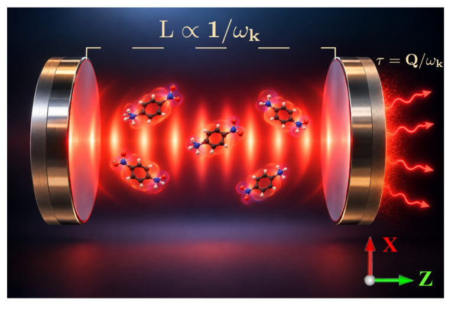
<figcaption class="paper-figure-caption"><b>Fig 1.</b> Figure 1: Representation of PNA embedded in a lossy Fabry-Pérot cavity having a lifetime τ = Q/ωk, where Q is the cavity quality factor and ωk the resonance frequency of the system. The cavity axis is oriented along the z-axis, with a length inversely proportional to the resonance frequency, L ∝1/ωk, while the cavity field is polarized along the x-axis.</figcaption>
</figure>
<figure class="paper-figure-card">
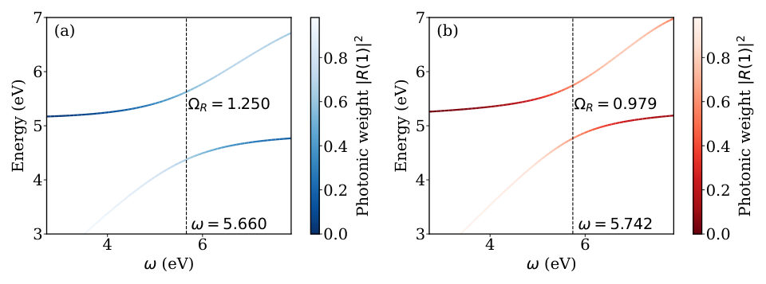
<figcaption class="paper-figure-caption"><b>Fig 2.</b> Figure 2: Polaritonic branches of PNA in the ideal cavity limit, Q →∞(Panel a), and for Q = 60 (Panel b). In both panels, the Rabi splitting ΩR and the corresponding cavity frequency ω are reported in eV. The time interval in panel b is set at τ = 5.01 fs corresponding to the cavity lifetime for Q = 60 and ω = 7.89 eV, which is the highest frequency considered in this analysis.</figcaption>
</figure>
<figure class="paper-figure-card">
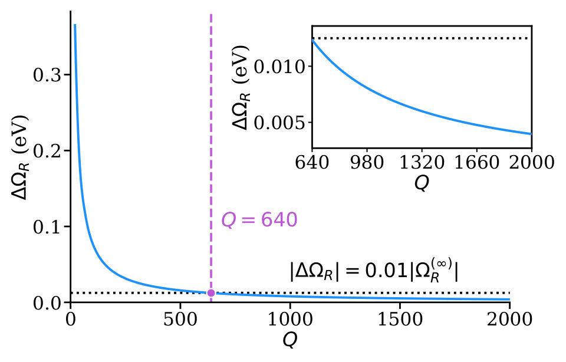
<figcaption class="paper-figure-caption"><b>Fig 3.</b> Figure 3: Convergence of the Rabi splitting towards the ideal-cavity limit as a function of the cavity quality factor Q. The deviation ∆ΩR = Ω(∞) R −Ω(Q) R is evaluated at ωc = 5.660 eV, corresponding to the minimum UP–LP separation in the ideal Q →∞limit, and at τ = 2.33 fs corresponding to the lifetime of a cavity with Q = 20 at this resonance frequency. The vertical purple dashed line marks Q = 640, above which the relative deviation falls below 1%. The horizontal black dashed line marks the corresponding threshold. The inset shows the Q = 640 −2000 range, where the deviations remain below 0.015 eV.</figcaption>
</figure>
<figure class="paper-figure-card">
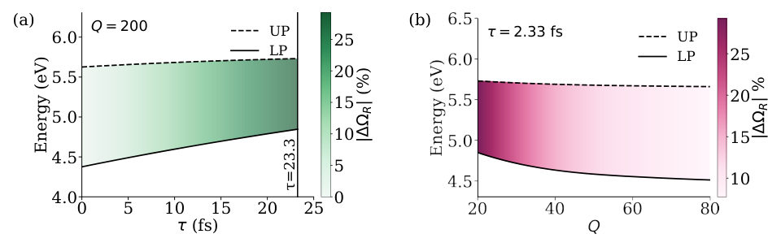
<figcaption class="paper-figure-caption"><b>Fig 4.</b> Figure 4: Effect of cavity dissipation on the polaritonic spectrum of PNA at the reference cavity frequency of 5.66 eV for the ideal cavity framework. (a) Evolution of the upper (UP) and lower (LP) polaritonic branches as a function of time interval τ for Q = 200. (b) Dependence of the UP and LP branches on the quality factor Q at τ = 2.33 fs which is the cavity lifetime associated with Q = 20. The color scale indicates the relative percentage deviation of the Rabi splitting from the ideal-cavity value.</figcaption>
</figure>
</div>

<p><strong>Summary.</strong> This theoretical work quantifies how cavity dissipation degrades the predicted energy splitting (Rabi splitting) in strongly coupled light-matter systems compared to ideal models. By modifying the Hamiltonian to account for finite cavity quality factors, the authors show that losses are a major factor, necessitating their inclusion in advanced ab-initio simulations for accurate quantum control protocols.</p>
<p><strong>Why it may be interesting.</strong> This work is highly relevant as it provides a necessary, computationally feasible correction to standard QED models, ensuring that theoretical predictions accurately reflect experimental realities involving cavity losses.</p>
<details>
<summary>Detailed structure</summary>
<p><strong>Main problem.</strong> The paper addresses the limitation of assuming ideal, lossless cavities in Cavity Quantum Electrodynamics (Cavity-QED) by quantifying the effect of cavity dissipation on light-matter strong coupling.</p>
<p><strong>Main result.</strong> Cavity dissipation significantly reduces the Rabi splitting by over 20% for realistic quality factors, demonstrating that losses substantially modify polaritonic energetics.</p>
<p><strong>Method.</strong> The authors extend the Pauli-Fierz Hamiltonian by incorporating dissipation via a damped harmonic oscillator model, leading to a time-averaged, Hermitian Hamiltonian suitable for ab-initio QED methods.</p>
<p><strong>Model / system.</strong> The system involves light-matter interaction within a Fabry-Pérot cavity, modeled using the Pauli-Fierz Hamiltonian extended to include cavity damping ($\kappa = \omega_k/Q$).</p>
<p><strong>Key observables.</strong> Rabi splitting and polaritonic energetics.</p>
<p><strong>Important parameters / regimes.</strong> Cavity Quality Factor (Q), coupling strength ($\lambda$), and the strong-coupling regime.</p>
<p><strong>Assumptions / limitations.</strong> The analysis relies on the very weak damping approximation and a first-order Maclaurin expansion of the vector potential.</p>
<p><strong>Figures summary.</strong> Figure 1 shows the polaritonic state dispersion of p-nitroaniline in a lossy Fabry-Pérot cavity.</p>
<p><strong>Paper structure.</strong> The paper introduces the modified Hamiltonian, details the mathematical transformation (PZW transformation) to maintain a real-valued, Hermitian form, and applies this framework to calculate the spectral changes using QED-CCSD.</p>
</details>
<details>
<summary>Abstract</summary>
<p>Cavity Quantum Electrodynamics (Cavity-QED) offers a powerful framework for controlling light-matter interactions, yet first-principles approaches commonly assume ideal, lossless cavity fields. Here, we introduce a minimal extension to the Pauli-Fierz Hamiltonian that accounts for cavity dissipation through the experimentally accessible cavity quality factor Q. The electromagnetic field is described as a damped harmonic oscillator within the very weak damping approximation. In this framework, cavity losses only enter the light-matter interaction and dipole self-energy terms, without introducing additional photonic degrees of freedom. A time-dependent unitary transformation yields a real-valued Hermitian Hamiltonian that can be incorporated into existing ab-initio QED methods without additional computational cost or changes in scaling. We combined the approach to the QED-CCSD method and investigated the effects of cavity dissipation on the optical spectrum of a p-nitroaniline molecule under strong light-matter coupling. We found that, for realistic quality factors, cavity dissipation can reduce the Rabi splitting by more than 20% compared to the ideal-cavity limit, even though the system remains in the strong-coupling regime. Convergence towards the ideal-cavity limit then requires substantially higher quality factors than those needed to establish strong coupling. These results demonstrate that cavity dissipation can significantly affect polaritonic energetics and highlight the importance of incorporating experimentally realistic cavity losses into quantitative ab-initio Cavity-QED simulations to accurately guide experimental protocols.</p>
</details>
<p><sub><a href="#top">↑ back to top</a></sub></p>

<p><a id="paper-2610.04969"></a></p>
<h3 id="hamiltonian-metric-learning-and-energy-based-training-a-dissipative-geometric-framework-for-optimization"><a href="http://arxiv.org/abs/2610.04969v1">Hamiltonian Metric Learning and Energy-Based Training: A Dissipative Geometric Framework for Optimization</a></h3>
<p><strong>Authors:</strong> Sparsho Chakraborty, Mohammad Alamgir, Nishanth M, Akshit Nanda, Ram Prasad Padhy, Sayan Mukherjee<br>
<strong>Type:</strong> theory · <strong>Category:</strong> disordered systems and neural networks · <strong>PDF:</strong> <a href="https://arxiv.org/pdf/2610.04969v1">https://arxiv.org/pdf/2610.04969v1</a><br>
<strong>Analysis basis:</strong> full PDF text, analyzed in chunks
<strong>Topic relevance:</strong> <code>Keldysh / 2PI / non-Gaussian methods</code> <strong>1/5</strong> · <code>analog quantum simulation</code> <strong>1/5</strong> · <code>correlated / nonlocal dissipation</code> <strong>1/5</strong> · <code>driven-dissipative phase transition</code> <strong>1/5</strong> · <code>methods for driven-dissipative</code> <strong>1/5</strong> · <code>non-equilibrium universality</code> <strong>1/5</strong></p>
<div class="figure-strip-hint">↔ Scroll figures horizontally</div>
<div class="paper-figures-scroll">
<figure class="paper-figure-card">
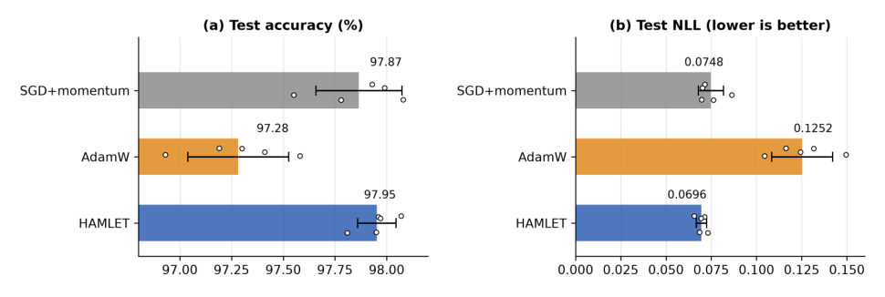
<figcaption class="paper-figure-caption"><b>Fig 1.</b> Fig. 1. MNIST MLP comparison over five paired seeds using one HAMLET formulation and two standard baselines. Bars show the mean final test metrics, error bars the sample standard deviation, and open circles the individual seeds; the numerical values are reported in Table II.</figcaption>
</figure>
<figure class="paper-figure-card">
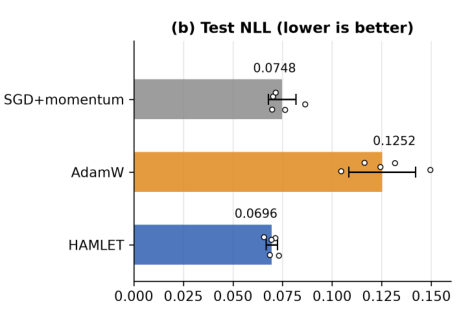
<figcaption class="paper-figure-caption"><b>Fig 2.</b> Figure 4 shows the exchange between kinetic and potential energy during the optimization. The total energy decreases as the trajectory approaches the stationary state, while kinetic energy becomes small near the minimum. This behavior is the discrete counterpart of the continuous dissipation law ˙H = −γpTg−1p ≤0.</figcaption>
</figure>
<figure class="paper-figure-card">
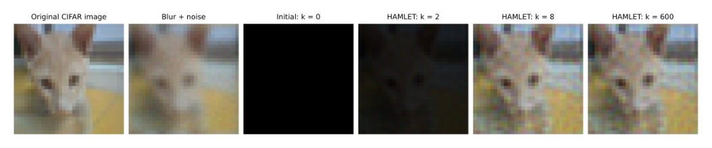
<figcaption class="paper-figure-caption"><b>Fig 3.</b> Fig. 2. Reconstruction of the selected CIFAR-10 image. From left to right: original image, blurred and noisy observation, zero initialization, two intermediate HAMLET iterates, and the final reconstruction.</figcaption>
</figure>
<figure class="paper-figure-card">
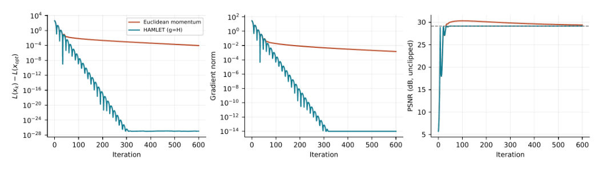
<figcaption class="paper-figure-caption"><b>Fig 4.</b> Fig. 3. Convergence of Euclidean momentum and HAMLET using the same numerical settings. The panels show the objective gap, gradient norm, and reconstruction quality during optimization.</figcaption>
</figure>
<figure class="paper-figure-card">
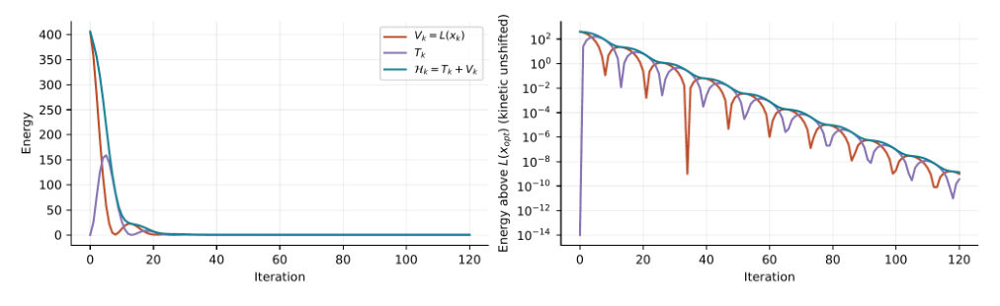
<figcaption class="paper-figure-caption"><b>Fig 5.</b> Fig. 4. Potential, kinetic, and total energy during HAMLET optimization. The logarithmic representation emphasizes the decay toward the minimum.</figcaption>
</figure>
</div>

<p><strong>Summary.</strong> This work develops HAMLET, a geometric framework that models machine learning optimization as a dissipative dynamical system. It treats the loss as potential energy and the parameter metric as kinetic geometry, deriving a full mechanical description. By analyzing controlled examples, the authors demonstrate how the metric induces a geometric force, providing a unified, physically rigorous view of optimization.</p>
<p><strong>Why it may be interesting.</strong> The connection between geometric dynamics (Hamiltonian mechanics) and the optimization landscape provides a powerful, physically grounded lens for understanding deep learning training dynamics, which is relevant to understanding complex energy landscapes in many-body physics.</p>
<details>
<summary>Detailed structure</summary>
<p><strong>Main problem.</strong> The paper reframes machine learning parameter optimization from standard iterative rules into the framework of a dissipative dynamical system.</p>
<p><strong>Main result.</strong> The proposed HAMLET framework successfully models optimization as a mechanical process governed by a Hamiltonian, a geometric force derived from the metric, and a dissipation term.</p>
<p><strong>Method.</strong> The authors derive the dynamics from a variational principle, leading to a continuous system that satisfies a monotonic energy-dissipation relation.</p>
<p><strong>Model / system.</strong> The model treats model parameters as generalized coordinates, the loss function as potential energy, and a positive-definite metric defining the local kinetic geometry of the parameter space.</p>
<p><strong>Key observables.</strong> Poincaré return maps, geometric force ($F_{geo}$), energy dissipation rate, and mean test accuracy/negative log-likelihood on benchmarks.</p>
<p><strong>Important parameters / regimes.</strong> The metric tensor $g(	heta)$, the loss function $L(	heta)$, and the dissipation coefficient $\gamma$.</p>
<p><strong>Assumptions / limitations.</strong> The core assumption is that optimization can be viewed as the trajectory of a physically motivated dynamical system, requiring the metric and loss to be sufficiently smooth.</p>
<p><strong>Figures summary.</strong> Figures compare Poincaré analysis for pixel space (constant metric) versus MPS space (position-dependent metric), showing how the geometric force and metric variation affect phase-space contraction.</p>
<p><strong>Paper structure.</strong> The paper introduces the Hamiltonian/dissipative framework, derives the governing equations including the geometric force, illustrates this with controlled image reconstruction problems (pixel vs. MPS), and concludes with benchmark testing on MNIST.</p>
</details>
<details>
<summary>Abstract</summary>
<p>Optimization in machine learning is usually expressed through iterative rules that update model parameters using information from the loss landscape. In this work, we study an alternative viewpoint in which parameter optimization is treated as the evolution of a dissipative dynamical system. The model parameters are regarded as generalized coordinates, the loss acts as a potential energy, and a positive-definite metric defines the local kinetic geometry of parameter space. Starting from a variational formulation, we derive the corresponding Hamiltonian dynamics, the geometric force generated by a position-dependent metric, and a metric-compatible Rayleigh dissipation law. The resulting continuous system satisfies a monotonic energy-dissipation relation, while its discrete form allows the influence of curvature on the optimization trajectory to be studied directly. We illustrate the framework using a controlled CIFAR-10 image-reconstruction problem for which the optimum is known analytically. With the image Hessian used as the metric, the curvature dependence of the quadratic modal dynamics is removed. We then reparameterize the same image as a matrix product state, producing a genuinely position-dependent metric and a nonzero geometric force. Poincaré return maps provide a complementary phase-space view of the resulting contraction dynamics. These examples establish HAMLET as a geometric, energy-based framework for studying optimization as dissipative motion in parameter space. On a five-seed MNIST MLP benchmark, HAMLET attains the highest mean test accuracy (97.95\%) and the lowest mean test negative log-likelihood (0.0696) among the three evaluated optimizers.</p>
</details>
<p><sub><a href="#top">↑ back to top</a></sub></p>

<p><a id="paper-2610.06016"></a></p>
<h3 id="nonthermal-nonlinear-many-body-excitonic-dynamics-in-high-purity-silicon"><a href="http://arxiv.org/abs/2610.06016v1">Nonthermal nonlinear many-body excitonic dynamics in high-purity silicon</a></h3>
<p><strong>Authors:</strong> Patrick Pilch, Siyu Duan, Yang Liu, Manfred Bayer, Marc Assmann, Zhe Wang<br>
<strong>Type:</strong> experiment · <strong>Category:</strong> strongly correlated electrons · <strong>PDF:</strong> <a href="https://arxiv.org/pdf/2610.06016v1">https://arxiv.org/pdf/2610.06016v1</a><br>
<strong>Analysis basis:</strong> full PDF text, analyzed in chunks
<strong>Topic relevance:</strong> <code>Keldysh / 2PI / non-Gaussian methods</code> <strong>1/5</strong> · <code>correlated / nonlocal dissipation</code> <strong>1/5</strong> · <code>driven-dissipative phase transition</code> <strong>1/5</strong> · <code>interference shaping light</code> <strong>1/5</strong> · <code>methods for driven-dissipative</code> <strong>1/5</strong> · <code>non-equilibrium universality</code> <strong>1/5</strong></p>
<div class="figure-strip-hint">↔ Scroll figures horizontally</div>
<div class="paper-figures-scroll">
<figure class="paper-figure-card">
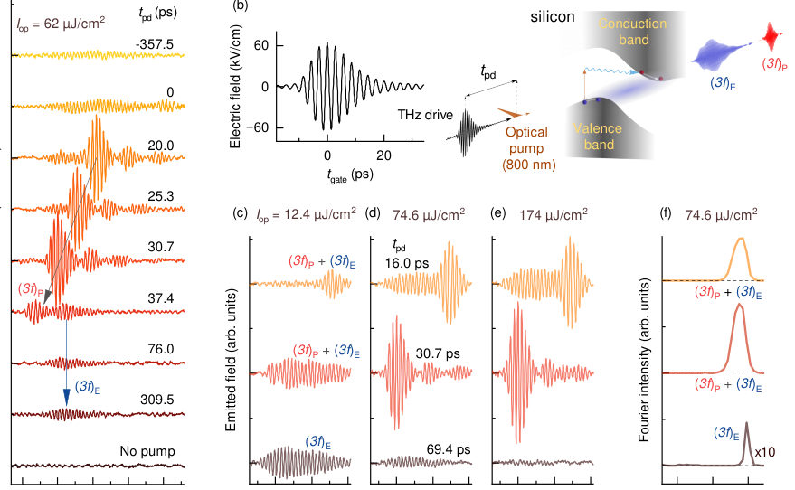
<figcaption class="paper-figure-caption"><b>Fig 1.</b> Figure 1. (a) THz third harmonic amplitudes for various pump-drive delays tpd at a fixed optical pump fluence of Iop = 62 µJ/cm2 and a driving THz electric field of 65 kV/cm. With varying tpd, a shifting and a non-shifting third-harmonic signal are resolved as indicated by the arrows and denoted by (3f)P and (3f)E for plasma and excitonic emission, respectively. (b) Waveform of the 0.35 THz drive pulse, and schematics of THz field-driven charge carrier dynamics after phonon-assisted optical excitations in the indirect bandgap semiconductor silicon. The valence and conduction bands are characterized by nonparabolic dispersion relations, which is crucial for efficient nonlinear THz emission...</figcaption>
</figure>
<figure class="paper-figure-card">
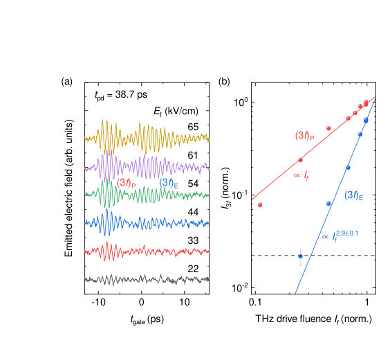
<figcaption class="paper-figure-caption"><b>Fig 2.</b> Figure 2. Time-domain third-harmonic traces measured with Iop = 74.6 µJ/cm2 for different THz drive fields from 22 to 65 kV/cm (a) at tpd = 38.7 ps where two third-harmonic contributions (3 f)E and (3f)P are well separated. (b) The integrated third-harmonic intensity I3 f of the plasma contribution exhibits a linear dependence on the THz drive fluence If , while for the exciton contribution I3f ∝I2.9±0.1 f . The noise level is indicated by the horizontal dashed lines.</figcaption>
</figure>
<figure class="paper-figure-card">
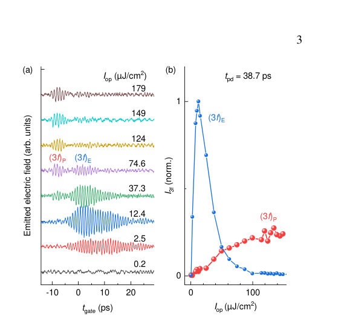
<figcaption class="paper-figure-caption"><b>Fig 3.</b> Figure 3. (a) Optical pump fluence dependence of third-harmonic yields measured with a THz drive field of 65 kV/cm at a pump-drive delay of tpd = 38.7 ps, where two THG contributions are resolvable and labelled by (3 f)P and (3 f)E. (b) Integrated THG intensity I3 f versus optical pump fluence Iop, as derived from the time-domain signals in (a) for the two contributions (3 f)E and (3 f)P separately.</figcaption>
</figure>
</div>

<p><strong>Summary.</strong> This work uses time-resolved THG spectroscopy to study how excitons behave in high-purity silicon under non-equilibrium, non-thermal conditions at room temperature. By analyzing the nonlinear response, the authors successfully distinguish the characteristic dynamics of excitons from those of free electron-hole plasma. This demonstrates a powerful tool for probing strongly correlated many-body physics in semiconductors.</p>
<p><strong>Why it may be interesting.</strong> The ability to spectroscopically isolate and characterize non-equilibrium excitonic correlations using nonlinear optical techniques provides insights into strongly correlated electron behavior in semiconductors, bridging concepts from excitonic insulators and plasma physics.</p>
<details>
<summary>Detailed structure</summary>
<p><strong>Main problem.</strong> The study investigates the nonthermal nonlinear many-body excitonic dynamics occurring in high-purity silicon at room temperature.</p>
<p><strong>Main result.</strong> The research successfully distinguishes between plasma-driven and exciton-driven nonlinear responses, showing that excitonic dynamics exhibit a non-linear power-law dependence on the THz drive field, unlike the linear plasma response.</p>
<p><strong>Method.</strong> Time-resolved optical pump-terahertz third-harmonic generation (THG) spectroscopy was employed to probe the ultrafast, non-equilibrium charge dynamics.</p>
<p><strong>Model / system.</strong> The physical system is high-purity silicon, an indirect bandgap semiconductor. The dynamics are studied far from thermal equilibrium using pulsed optical pumping, allowing the observation of transient excitonic states.</p>
<p><strong>Key observables.</strong> Third-harmonic generation (THG) signal, separated into plasma ($   ext{(3f)}<em op>P$) and excitonic ($ ext{(3f)}_E$) contributions; THG intensity dependence on THz drive fluence ($I_f$) and optical pump fluence ($I</em>$).}$); time-delay dependence ($t_{pd</p>
<p><strong>Important parameters / regimes.</strong> Picosecond time scale; Room temperature (where excitons are unstable in equilibrium); Non-linear dependence ($I_{3f} \propto I_f^{2.9 \pm 0.1}$) for excitons.</p>
<p><strong>Assumptions / limitations.</strong> The analysis assumes that the observed differences in fluence dependence are characteristic of the underlying physical processes (plasma vs. exciton).</p>
<p><strong>Figures summary.</strong> Figures illustrate time-domain THz third-harmonic amplitudes and integrated intensity dependence on THz drive fluence, clearly separating the plasma and excitonic contributions based on their nonlinear scaling and time evolution.</p>
<p><strong>Paper structure.</strong> The paper presents experimental results derived from time-resolved THG spectroscopy, systematically analyzing the dependence of the signal on pump-drive delay, THz drive fluence, and optical pump fluence to differentiate between plasma and excitonic nonlinear responses.</p>
</details>
<details>
<summary>Abstract</summary>
<p>We report time-resolved optical pump-terahertz third-harmonic generation spectroscopy of picosecond nonthermal many-body charge dynamics in high-purity silicon at room temperature. Although in thermal equilibrium excitons in silicon are unstable due to a lower binding energy than the thermal energy at room temperature, following pulsed non-resonant optical pumping we can identify the formation of transient excitonic states on the picosecond time scale in our high-resolution nonlinear spectroscopic measurements. In contrast to unbound electron-hole pairs, the nonthermal many-body excitonic dynamics feature a characteristic time-dependent evolution, a distinct dependence on charge density, and a nonperturbative nonlinear terahertz response.</p>
</details>
<p><sub><a href="#top">↑ back to top</a></sub></p>

<p><a id="paper-2610.05917"></a></p>
<h3 id="stability-and-current-driven-dynamics-of-mixed-topology-bimeron-clusters"><a href="http://arxiv.org/abs/2610.05917v1">Stability and current-driven dynamics of mixed-topology bimeron clusters</a></h3>
<p><strong>Authors:</strong> Philippe Heymes, Thomas L. Schmidt, Vladyslav M. Kuchkin<br>
<strong>Type:</strong> theory · <strong>Category:</strong> strongly correlated electrons · <strong>PDF:</strong> <a href="https://arxiv.org/pdf/2610.05917v1">https://arxiv.org/pdf/2610.05917v1</a><br>
<strong>Analysis basis:</strong> full PDF text, analyzed in chunks
<strong>Topic relevance:</strong> <code>Frenkel-Kontorova</code> <strong>1/5</strong> · <code>Keldysh / 2PI / non-Gaussian methods</code> <strong>1/5</strong> · <code>analog quantum simulation</code> <strong>1/5</strong> · <code>driven-dissipative phase transition</code> <strong>1/5</strong> · <code>methods for driven-dissipative</code> <strong>1/5</strong> · <code>non-equilibrium universality</code> <strong>1/5</strong></p>
<div class="figure-strip-hint">↔ Scroll figures horizontally</div>
<div class="paper-figures-scroll">
<figure class="paper-figure-card">
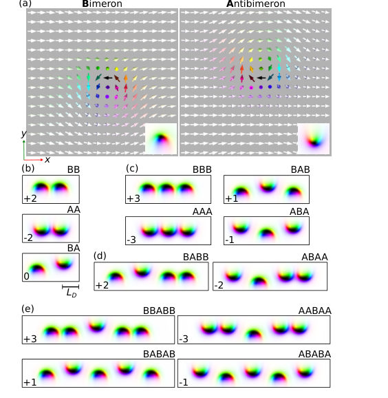
<figcaption class="paper-figure-caption"><b>Fig 1.</b> FIG. 1. Bimeron and antibimeron. Bimerons spin tex- tures are color-coded with HUE given by arctan(mz/my) ∈ [0, 360◦], while saturation S and value V are given by the mx component of magnetization, i.e., rotated standard color- code [18]. For visualization purposes, we utilize contour plots (the bottom-right insets (a)) instead of the vector fields; this representation is used throughout the paper. (b)-(e) show stable clusters composed of different numbers of bimerons (B) and antibimeorns (A); values of the topological charge of the cluster are provided in the bottom-left corner.</figcaption>
</figure>
<figure class="paper-figure-card">
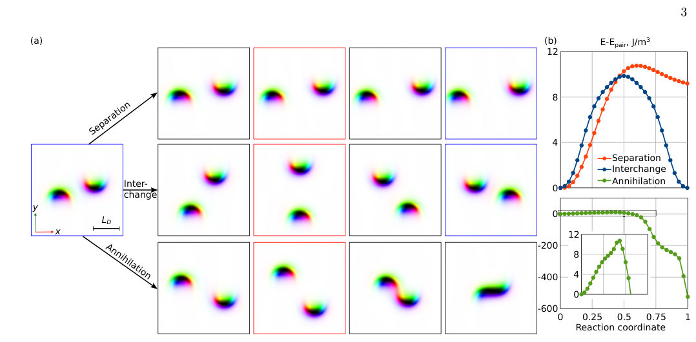
<figcaption class="paper-figure-caption"><b>Fig 2.</b> FIG. 2. Bimeron-antibimeron cluster stability. (a) Snapshots of the system corresponding to minimum energy path transitions, separation, interchange, and annihilation, respectively, calculated with the geodesic nudged elastic band method. Minimum (saddle point) states are highlighted with blue (red) frames. (b) Energy dependencies for the transitions (a). The rightmost point in panel (b) for the annihilation transition corresponds to the uniform state, m(r) = ez.</figcaption>
</figure>
<figure class="paper-figure-card">
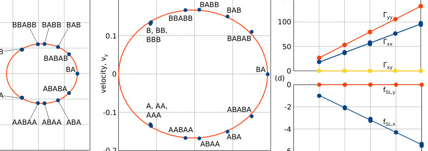
<figcaption class="paper-figure-caption"><b>Fig 3.</b> FIG. 3. Results of LLG simulations. (a) and (b) velocity space for bimeron clusters [Fig. 1(b)-(e)] under Zhang-Li and Slonczewski torques, respectively. Points correspond to data extracted from LLG simulations; red ellipses are given by Eqs. (15) and (18) obtained from the Thiele equation analysis. (c) and (d) show dependencies of dissipation tensor components and force (10) on the total number of bimerons in a cluster.</figcaption>
</figure>
</div>

<p><strong>Summary.</strong> This work analyzes the stability and motion of clusters of magnetic bimerons, which are topological magnetic textures. Using advanced computational methods, the authors determine that the cluster's dynamics are constrained to move along an ellipse in velocity space. This provides a quantitative understanding of how topological charge and applied currents govern the collective behavior of these magnetic structures.</p>
<p><strong>Why it may be interesting.</strong> While focused on classical micromagnetics, the study of topological defects and their collective dynamics under external driving forces (currents) shares conceptual links with understanding emergent collective excitations in strongly correlated electron systems.</p>
<details>
<summary>Detailed structure</summary>
<p><strong>Main problem.</strong> The study investigates the stability and current-driven dynamics of bimeron clusters, which are magnetic skyrmion-like structures with mixed topological indices.</p>
<p><strong>Main result.</strong> The cluster's velocity space is found to be an ellipse governed by the model Hamiltonian, and the stability is determined by energy barriers associated with separation, interchange, and annihilation.</p>
<p><strong>Method.</strong> The authors employed the Geodesic Nudged Elastic Band (GNEB) method for stability analysis and the Thiele approach for analyzing steady-state dynamics.</p>
<p><strong>Model / system.</strong> The system involves magnetic bimerons (in-plane skyrmions) governed by a micromagnetic Hamiltonian and dynamics described by the Landau-Lifshitz-Gilbert (LLG) equation, incorporating Zhang-Li and Slonczewski torques.</p>
<p><strong>Key observables.</strong> Topological charge (Q), energy barriers for transitions (separation, interchange, annihilation), and the elliptical geometry of the cluster velocity vector (v).</p>
<p><strong>Important parameters / regimes.</strong> The total topological charge (Q), damping ($\alpha$), and the specific forms of the applied currents (Zhang-Li vs. Slonczewski).</p>
<p><strong>Assumptions / limitations.</strong> The analysis relies on the rigid motion approximation inherent in the Thiele approach, and the annihilation transition is considered irrelevant at low current strengths.</p>
<p><strong>Figures summary.</strong> Figures illustrate the bimeron/antibimeron structures and stable clusters, show the minimum energy path (MEP) transitions, and map the resulting velocity space as ellipses for different current driving mechanisms.</p>
<p><strong>Paper structure.</strong> The paper proceeds by first analyzing the stability of the simplest bimeron-antibimeron pair using GNEB, establishing general principles. It then moves to studying the dynamics under applied currents using the Thiele approach, culminating in the derivation and analysis of the elliptical velocity manifold.</p>
</details>
<details>
<summary>Abstract</summary>
<p>In this work, we study bimerons (in-plane skyrmions) and their clusters composed of states with mixed topological indices. These clusters provide flexibility in controlling the skyrmion Hall angle, which depends on the cluster's total topological charge. First, using the simplest such cluster, a bimeron-antibimeron pair, we examine its stability with the geodesic nudged elastic band method and identify three mechanisms -- bimeron separation, interchange, and annihilation -- with comparable energy barriers that determine the pair's overall stability. This provides an upper bound for the stability of more sophisticated clusters of bimerons and antibimerons. Then, we numerically study the clusters' dynamics for currents applied in-plane and perpendicular to the plane, corresponding to the Zhang-Li and Slonczewski mechanisms. Finally, we analyze the dynamics of a wide variety of bimeron clusters within the Thiele approach and show that their velocities always lie on a specific ellipse whose parameters are fully governed by the model Hamiltonian.</p>
</details>
<p><sub><a href="#top">↑ back to top</a></sub></p>

<p><a id="paper-2610.06720"></a></p>
<h3 id="interplay-between-excitability-and-noise-in-analog-spiking-neurons"><a href="http://arxiv.org/abs/2610.06720v1">Interplay between Excitability and Noise in Analog Spiking Neurons</a></h3>
<p><strong>Authors:</strong> Léopold Van Brandt, Alon Ascoli, Michele Bonnin, Grégoire Brandsteert, Denis Flandre, Jean-Charles Delvenne<br>
<strong>Type:</strong> both · <strong>Category:</strong> statistical mechanics · <strong>PDF:</strong> <a href="https://arxiv.org/pdf/2610.06720v1">https://arxiv.org/pdf/2610.06720v1</a><br>
<strong>Analysis basis:</strong> full PDF text, analyzed in chunks
<strong>Topic relevance:</strong> <code>Keldysh / 2PI / non-Gaussian methods</code> <strong>1/5</strong> · <code>driven-dissipative phase transition</code> <strong>1/5</strong> · <code>methods for driven-dissipative</code> <strong>1/5</strong> · <code>non-equilibrium universality</code> <strong>1/5</strong></p>
<div class="figure-strip-hint">↔ Scroll figures horizontally</div>
<div class="paper-figures-scroll">
<figure class="paper-figure-card">
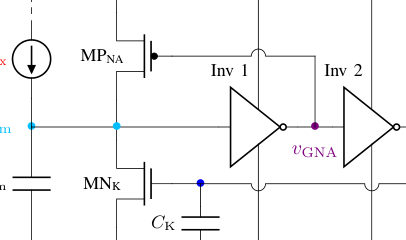
<figcaption class="paper-figure-caption"><b>Fig 1.</b> Fig. 1: Diagram of an ultra-low-power CMOS analog spiking neuron based on a simplified Morris-Lecar model [4]. The input is the excitatory current iex, while the output is the node voltage vGK.</figcaption>
</figure>
<figure class="paper-figure-card">
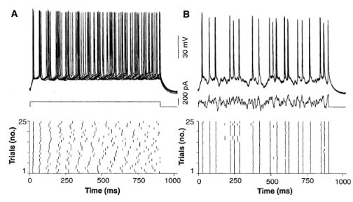
<figcaption class="paper-figure-caption"><b>Fig 2.</b> Fig. 2: Reliability of spike timing in a rat neocortical neuron stimulated by (A) a constant supra-threshold current pulse; (B) a time-varying current (frozen filtered white Gaussian noise added to a constant component). Raster plots of the spike times for 25 consecutive trials are depicted at the bottom, for both experiments. Reprinted from [12] with permission from the AAAS.</figcaption>
</figure>
<figure class="paper-figure-card">
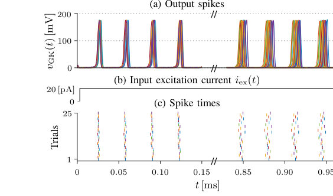
<figcaption class="paper-figure-caption"><b>Fig 3.</b> Fig. 3: CMOS analog neuron in oscillatory regime under a constant excitation current pulse of supra-threshold ampli- tude 20 pA. (a) Output spikes. (b) Input excitation current iex(t). (c) Raster plot of the spike times. Simulation parameters: time step ∆t = 1 ns, intrinsic tran- sistor noise bandwidth fmax = 500 MHz. 1000 trials were performed; only 25 are shown.</figcaption>
</figure>
<figure class="paper-figure-card">
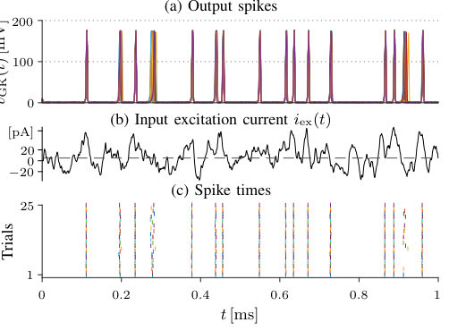
<figcaption class="paper-figure-caption"><b>Fig 4.</b> Fig. 4: CMOS analog neuron excited by frozen filtered white Gaussian noise, fluctuation around a constant current pulse of sub-threshold amplitude 5 pA. Input noise parameters: standard deviation σiex = 20 pA, filter time constant τ = 5 µs. (a) Output spikes. (b) Input excitation current iex(t). (c) Raster plot of the spike times. Same simulation parameters as in Figure 3.</figcaption>
</figure>
<figure class="paper-figure-card">
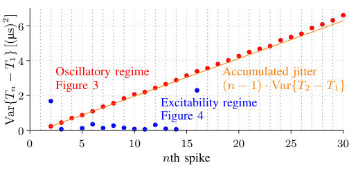
<figcaption class="paper-figure-caption"><b>Fig 5.</b> Fig. 5: Analysis of the trial-to-trial variability in the spike times for the two types of input current, respectively trigger- ing the oscillatory (Figure 3, with mean inter-spike interval or spike period E{Tn −Tn−1} ≈32 µs) and excitability (Figure 4) behaviours. The jitter only accumulates over time for the former. The variance was estimated from 1000 trials. As discussed in the text, the variances of the 4th and 15th spike times of Figure 4 are very large (20 and 8 (µs)2) and go off the scale of the plot.</figcaption>
</figure>
</div>

<p><strong>Summary.</strong> This work simulates and analyzes the noise effects on CMOS analog spiking neurons, demonstrating that time-varying inputs improve spike timing reliability compared to constant inputs. By applying stochastic thermodynamics, the authors establish a fundamental physical limit (the TUR) that governs the trade-off between signal precision and energy dissipation in these artificial systems.</p>
<p><strong>Why it may be interesting.</strong> The application of non-equilibrium statistical mechanics tools like the TUR to analyze the operational limits of artificial neural circuits provides a powerful, physics-grounded constraint on computational efficiency and reliability.</p>
<details>
<summary>Detailed structure</summary>
<p><strong>Main problem.</strong> The paper investigates the fundamental interplay between noise and excitability in analog spiking neurons, specifically analyzing how input stimuli affect the reliability and jitter of spike timing.</p>
<p><strong>Main result.</strong> Time-varying inputs significantly reduce spike time jitter compared to constant excitation, and the analysis uses the Stochastic Thermodynamic Uncertainty Relation (TUR) to establish a fundamental reliability-dissipation tradeoff.</p>
<p><strong>Method.</strong> The study employs industrial physics-based transient noise SPICE simulations combined with theoretical tools from stochastic thermodynamics, such as the TUR.</p>
<p><strong>Model / system.</strong> The physical system is a CMOS analog spiking neuron modeled after the Morris-Lecar system, designed for neuromorphic hardware. The analysis compares its behavior under constant vs. time-varying external stimuli.</p>
<p><strong>Key observables.</strong> Spike time jitter (phase noise), spike time reliability, dissipated energy ($E_{	ext{dissip}}$), and the empirical frequency ($N/t$).</p>
<p><strong>Important parameters / regimes.</strong> Constant vs. time-varying input current, temperature ($kT$), and the fundamental limit set by the TUR.</p>
<p><strong>Assumptions / limitations.</strong> The analysis assumes the applicability of stochastic thermodynamics principles, though it notes the TUR may not apply to the non-stationary excitability regime.</p>
<p><strong>Figures summary.</strong> Figures illustrate the CMOS neuron's operation in both oscillatory (high jitter) and excitability (low jitter) regimes under different input currents, alongside plots comparing accumulated jitter over time.</p>
<p><strong>Paper structure.</strong> The paper progresses from simulating the physical behavior of the neuron under different noise conditions, quantifying jitter accumulation, and culminating in a theoretical analysis using the TUR to place fundamental limits on the achievable precision.</p>
</details>
<details>
<summary>Abstract</summary>
<p>A spiking neuron is a dynamical system exhibiting a limit cycle (a spike) when subject to sufficiently excitatory input. Famous neuroscience experiments by Bryant and Segundo as well as Mainen and Sejnowski revealed that the spike times of some biological neurons are more reliable when subject to time-varying stimuli compared to constant ones. Provided with an industrial physics-based transient noise SPICE simulation framework compatible with foundry transistor compact models, we have demonstrated similar behaviours for a CMOS analog spiking neuron designed for neuromorphic computing hardware platforms. Under constant excitation current, the neuron operates in oscillatory regime and the empirical periods (interspike intervals) suffer from accumulated phase noise (jitter) during successive cycles, mainly due to the thermal noise of transistors. A time-varying input is reported to be capable of triggering output spikes according to a controlled statetransition mechanism, thereby significantly reducing the spike time jitter in the excitability regime. The physical limitation of the oscillatory or rate-coding regime in terms of reliabilitydissipation tradeoff is further evidenced by a stochastic thermodynamic uncertainty relation, a theorem that applies to general overdamped dissipative stochastic dynamical systems.</p>
</details>
<p><sub><a href="#top">↑ back to top</a></sub></p>

<p><a id="paper-2610.05992"></a></p>
<h3 id="joint-gkp-encoding-for-ghz-states-transmission-over-bosonic-quantum-mimo-channels"><a href="http://arxiv.org/abs/2610.05992v1">Joint GKP Encoding for GHZ States Transmission over Bosonic Quantum MIMO Channels</a></h3>
<p><strong>Authors:</strong> Seid Koudia, Selssabil Kadid, Symeon Chatzinotas, Mérouane Debbah<br>
<strong>Type:</strong> theory · <strong>Category:</strong> quantum information and computing · <strong>PDF:</strong> <a href="https://arxiv.org/pdf/2610.05992v1">https://arxiv.org/pdf/2610.05992v1</a><br>
<strong>Analysis basis:</strong> full PDF text, analyzed in chunks
<strong>Topic relevance:</strong> <code>Keldysh / 2PI / non-Gaussian methods</code> <strong>1/5</strong> · <code>correlated / nonlocal dissipation</code> <strong>1/5</strong> · <code>methods for driven-dissipative</code> <strong>1/5</strong> · <code>quantum measurements</code> <strong>1/5</strong></p>
<div class="figure-strip-hint">↔ Scroll figures horizontally</div>
<div class="paper-figures-scroll">
<figure class="paper-figure-card">

<figcaption class="paper-figure-caption"><b>Fig 1.</b> Fig. 1. General CSI-aware Gaussian QuMIMO-GKP architecture. CSI programs the encoder lattice/frame, receiver frame and gain, and the covariance used by the joint classical likelihood decoder. GKP syndrome extraction remains local to each oscillator; only the final logical decision is joint.</figcaption>
</figure>
<figure class="paper-figure-card">

<figcaption class="paper-figure-caption"><b>Fig 2.</b> Fig. 2. Reference-spectrum GHZ-sector probabilities for the product baseline and JF and JI optimized channel meshes of Table I</figcaption>
</figure>
<figure class="paper-figure-card">

<figcaption class="paper-figure-caption"><b>Fig 3.</b> Fig. 3. JG optimized CSI encoder and decoder circuits at the common comparison channel. Modes 1–3 run from top to bottom and gates act left-to-right. Signed (θ, ϕ) values in radians describe the compiled full meshes and inverse gates, not the search coordinates of Eq. (13). Orange boxes are phases and green boxes are gains.</figcaption>
</figure>
<figure class="paper-figure-card">

<figcaption class="paper-figure-caption"><b>Fig 4.</b> Fig. 4. Distance sweep with fixed reference JF and JI meshes and distance-retuned singular frames and MMSE gains. The vertical line marks the nominal 10-km channel; the horizontal lines mark the GHZ witness threshold and zero coherent information.</figcaption>
</figure>
</div>

<p><strong>Summary.</strong> This work develops a joint GKP encoding scheme to protect GHZ states transmitted through noisy bosonic quantum channels. By optimizing the lattice structure based on channel information, the authors show that joint processing adapts to anisotropic noise better than simpler product methods. This advances the understanding of robust quantum communication in complex, realistic quantum network environments.</p>
<p><strong>Why it may be interesting.</strong> It provides a concrete, advanced framework for quantum communication over realistic noisy channels, directly addressing resource limitations (like CSI) in quantum networking protocols.</p>
<details>
<summary>Detailed structure</summary>
<p><strong>Main problem.</strong> The paper investigates the challenge of transmitting fragile Greenberger-Horne-Zeilinger (GHZ) states over realistic, nonunitary Quantum Multiple-Input Multiple-Output (QuMIMO) bosonic channels.</p>
<p><strong>Main result.</strong> Joint GKP lattice shaping significantly outperforms product GKP processing, demonstrating that adapting the logical lattice to the anisotropic noise geometry is crucial for high-fidelity state preservation.</p>
<p><strong>Method.</strong> The authors employ a sophisticated transceiver combining programmable passive meshes, quantum-limited MMSE gain, local GKP recovery, and joint classical syndrome decoding.</p>
<p><strong>Model / system.</strong> The system is modeled as a bosonic QuMIMO channel governed by a coupled-mode Gaussian evolution equation, incorporating coherent mixing, mode-dependent attenuation, and Gaussian noise.</p>
<p><strong>Key observables.</strong> GHZ-state fidelity ($F_{GHZ}$), entanglement fidelity ($    ext{Fe}$), and coherent information ($I_c$) are used to quantify state preservation.</p>
<p><strong>Important parameters / regimes.</strong> Channel-State Information (CSI) availability (full instantaneous vs. singular-value conditioned vs. statistical) and the degree of coherent basis drift are critical parameters.</p>
<p><strong>Assumptions / limitations.</strong> The required CSI is assumed to be supplied by an offline channel-estimation stage, and the exact classical Pauli-coset decoding is complex, necessitating structured lattices.</p>
<p><strong>Figures summary.</strong> Figures illustrate the CSI-aware Gaussian QuMIMO-GKP architecture and show performance metrics (like $F_{GHZ}$) across varying propagation distances, comparing joint vs. product processing schemes.</p>
<p><strong>Paper structure.</strong> The paper details the physical model, introduces the GKP encoding/decoding framework, develops optimization functionals based on residual Pauli distributions, and compares performance across different CSI utilization regimes.</p>
</details>
<details>
<summary>Abstract</summary>
<p>We study transmission of a Greenberger-Horne-Zeilinger (GHZ) state over nonunitary quantum multiple-input multiple-output (QuMIMO) channels using finite-energy Gottesman-Kitaev-Preskill (GKP) encoding. A coupled-mode model describes coherent mixing, mode-dependent attenuation, and Gaussian noise. The transceiver combines programmable passive meshes, quantum-limited MMSE gain, local GKP recovery, and joint classical syndrome decoding. We optimize complex-Givens lattices using instantaneous channel-state information (CSI), current singular values with channel statistics, or statistics alone. Simulations show that joint lattice shaping outperforms product GKP processing. Under coherent-basis drift, full instantaneous CSI improves GHZ-state preservation, whereas singular-value conditioned and fully statistical designs perform similarly because neither resolves the current singular frames. These findings identify singular-frame geometry as a critical resource beyond attenuation knowledge where joint GKP processing adapts the logical lattice and receiver to anisotropic bosonic noise rather than merely inverting multimode mixing.</p>
</details>
<p><sub><a href="#top">↑ back to top</a></sub></p>

<p><a id="paper-2610.06682"></a></p>
<h3 id="interacting-quantum-criticality-with-u1-symmetry-breaking-in-11-dimensions"><a href="http://arxiv.org/abs/2610.06682v1">Interacting quantum criticality with U(1) symmetry breaking in 1+1 dimensions</a></h3>
<p><strong>Authors:</strong> Mutsumi Shimomura, Kohei Kawabata<br>
<strong>Type:</strong> theory · <strong>Category:</strong> statistical mechanics · <strong>PDF:</strong> <a href="https://arxiv.org/pdf/2610.06682v1">https://arxiv.org/pdf/2610.06682v1</a><br>
<strong>Analysis basis:</strong> full PDF text, analyzed in chunks
<strong>Topic relevance:</strong> <code>Keldysh / 2PI / non-Gaussian methods</code> <strong>1/5</strong> · <code>analog quantum simulation</code> <strong>1/5</strong> · <code>non-equilibrium universality</code> <strong>1/5</strong></p>
<div class="figure-strip-hint">↔ Scroll figures horizontally</div>
<div class="paper-figures-scroll">
<figure class="paper-figure-card">

<figcaption class="paper-figure-caption"><b>Fig 1.</b> FIG. 1. Subsystem Binder ratio and finite-size scaling for the spin-1 chain. (a) Half-chain Binder ratio Rhalf = ⟨(Mz,half)4⟩/⟨(Mz,half)2⟩2 as a function of the anisotropy parameter g1 for the indicated system sizes L, with Mz,half = PL/2 i=1 Sz i . The lines connect the measured points. Inset: crossing points g×(L, L + 2) of the Binder-ratio curves for system sizes L and L + 2, plotted against Leff = p</figcaption>
</figure>
<figure class="paper-figure-card">

<figcaption class="paper-figure-caption"><b>Fig 2.</b> FIG. 2. Finite-size and finite-entanglement scaling of the squared transverse magnetization m2 ⊥in the spin-1 chain (J = g2 = 1, g1 = −0.8258). (a) DMRG results of m2 ⊥(L) in the Mz = 0 sector as a function of L−1. The solid line is a quadratic fit in L−1 over 20 ≤L ≤72. The gray dash-dotted line shows the exact ferromagnetic Heisenberg result m2 ⊥(L) = 1 + 1/L. (b) Extrapolated m2 ⊥(∞) as a function of the minimum system size Lmin included in each fit, with Lmax = 72 fixed. The horizontal dotted line marks the representative estimate 0.9473 from the fit with Lmin = 20. (c) VUMPS results of m2 ⊥,χ(ℓ) for block lengths ℓ= 64, 96, 128 and bond dimensions χ = 1024, 1280, 1536, 1792, 2048 as a...</figcaption>
</figure>
<figure class="paper-figure-card">

<figcaption class="paper-figure-caption"><b>Fig 3.</b> FIG. 3. Finite-size scaling of the lowest neutral excitation gap in the periodic spin-1 chain (J = g2 = 1, Mz = 0). (a) Ef- fective dynamical critical exponent zeff, defined in Eq. (56), as a function of L−2 eff , with Leff = p</figcaption>
</figure>
<figure class="paper-figure-card">

<figcaption class="paper-figure-caption"><b>Fig 4.</b> FIG. 4. Finite-entanglement scaling of longitudinal correlations in the spin-1 chain at g1 = −0.8258. We plot −ξ0(χ)2∆ψC(χ) zz (r) against r/ξ0(χ) for (a) ∆ψ = 0.507 from Eq. (62), (b) the Gaussian value ∆ψ = 0.5, and (c,d) the comparison values ∆ψ = 0.4 and ∆ψ = 0.6. Here, C(χ) zz (r) is defined in Eq. (65), and ξ0(χ) is the longest nontrivial neutral-sector transfer-matrix correlation length. The solid lines connect all calculated points, and colors denote the bond dimensions listed in (a), with the same assignments in all panels.</figcaption>
</figure>
<figure class="paper-figure-card">

<figcaption class="paper-figure-caption"><b>Fig 5.</b> FIG. 5. Subsystem Binder ratio and finite-size scaling for the spin-1/2 chain. (a) Half-chain Binder ratio Rhalf = ⟨(Mz,half)4⟩/⟨(Mz,half)2⟩2 as a function of the anisotropy parameter g1 for the indicated system sizes L, with Mz,half = PL/2 i=1 Sz i . The lines connect the measured points. Inset: crossing points g×(L, L + 4) of the Binder-ratio curves for system sizes L and L + 4, plotted against Leff = p</figcaption>
</figure>
</div>

<p><strong>Summary.</strong> This work investigates spontaneous U(1) symmetry breaking in 1D quantum spin chains, contradicting standard expectations for such systems. By applying advanced numerical simulations and field theory, the authors locate an interacting quantum critical point, yielding critical exponents that deviate from simple theoretical predictions. This establishes a new criterion for understanding symmetry breaking in low-dimensional quantum materials.</p>
<p><strong>Why it may be interesting.</strong> The finding of $z < 2$ provides a concrete, measurable criterion to distinguish novel mechanisms of continuous symmetry breaking in low-dimensional quantum systems, which is highly relevant for understanding quantum criticality in condensed matter systems.</p>
<details>
<summary>Detailed structure</summary>
<p><strong>Main problem.</strong> The paper investigates the spontaneous breaking of U(1) spin-rotation symmetry and the emergence of an interacting quantum critical point in 1+1 dimensions, challenging expectations from the Hohenberg-Mermin-Wagner theorem.</p>
<p><strong>Main result.</strong> The study finds numerical evidence for interacting quantum critical behavior, determining the correlation-length critical exponent $\nu \approx 0.60$ and a dynamical critical exponent $z < 2$, which implies a mechanism for symmetry breaking distinct from frustration-free models.</p>
<p><strong>Method.</strong> The research employs a combination of numerical techniques, including Subsystem Binder scaling and DMRG/VUMPS simulations, alongside field-theoretic renormalization group (RG) analysis.</p>
<p><strong>Model / system.</strong> The models studied are lattice spin-1/2 and spin-1 chains with finite-range interactions, analyzed via their continuum field theory description involving a U(1) phase field $\theta$.</p>
<p><strong>Key observables.</strong> Correlation-length critical exponent ($\nu$), dynamical critical exponent ($z$), and the finite-size scaling of the transverse magnetization ($\langle m_{\perp}^2 \rangle$).</p>
<p><strong>Important parameters / regimes.</strong> The critical couplings ($g_{1c}$) and the comparison of calculated exponents ($\nu \neq 0.5$, $z \neq 2$) against Gaussian predictions.</p>
<p><strong>Assumptions / limitations.</strong> The analysis relies on the validity of continuum field theories and the applicability of finite-size scaling methods to locate the critical point.</p>
<p><strong>Figures summary.</strong> Figures illustrate the half-chain Binder ratio crossing point analysis to estimate critical couplings and exponents, and show the finite-size scaling of the transverse magnetization density.</p>
<p><strong>Paper structure.</strong> The paper first establishes the theoretical conflict with the Mermin-Wagner theorem, then develops the field-theoretic action, applies RG analysis, and finally uses advanced numerical methods (DMRG/VUMPS) on specific spin chains to extract universal critical exponents.</p>
</details>
<details>
<summary>Abstract</summary>
<p>The Hohenberg-Mermin-Wagner theorem motivates the expectation that continuous symmetries remain unbroken in one-dimensional quantum ground states. Here, contrary to this expectation, we demonstrate the spontaneous breaking of U(1) spin-rotation symmetry and the emergence of an interacting quantum critical point in lattice spin-$1/2$ and spin-$1$ chains. Using subsystem Binder scaling, we locate the critical point and determine the correlation-length critical exponent as $ν= 0.60 \pm 0.02$, distinct from the Gaussian value $0.5$ but consistent with the perturbative renormalization-group prediction. We further analyze the finite-size scaling of the lowest neutral excitation gap and obtain the dynamical critical exponent $z=1.986 \pm 0.005$. The result $z < 2$ is incompatible with microscopic realizations of this critical theory by frustration-free models, implying a mechanism for continuous symmetry breaking in one-dimensional quantum ground states distinct from frustration freeness.</p>
</details>
<p><sub><a href="#top">↑ back to top</a></sub></p>

<p><a id="paper-2610.04024"></a></p>
<h3 id="accelerated-search-for-global-extrema-in-structured-quantum-signals"><a href="http://arxiv.org/abs/2610.04024v1">Accelerated search for global extrema in structured quantum signals</a></h3>
<p><strong>Authors:</strong> Sachin S. Bharadwaj, Katepalli R. Sreenivasan<br>
<strong>Type:</strong> theory · <strong>Category:</strong> quantum information and computing · <strong>PDF:</strong> <a href="https://arxiv.org/pdf/2610.04024v1">https://arxiv.org/pdf/2610.04024v1</a><br>
<strong>Analysis basis:</strong> full PDF text, analyzed in chunks
<strong>Topic relevance:</strong> <code>analog quantum simulation</code> <strong>1/5</strong> · <code>quantum measurements</code> <strong>1/5</strong></p>
<div class="figure-strip-hint">↔ Scroll figures horizontally</div>
<div class="paper-figures-scroll">
<figure class="paper-figure-card">

<figcaption class="paper-figure-caption"><b>Fig 1.</b> FIG. 1. End-to-end workflow of the quantum extrema-search algorithm – The input amplitude state is first calibrated to determine the threshold λ and finite filter threshold width ΓN. QG1 then applies the Chebyshev-walk polynomial filter, suppressing the background while retaining the extreme-event tail. Repeated successful measurements recover O(log N) candidate addresses, after which only these candidates are compared and the extremal address, along with its value and sign, is certified. QG2a optionally enhances extrema that stand out from their local surroundings by subtracting a neighborhood average before filtering, while QG2b optionally localizes a dominant candidate using the binary...</figcaption>
</figure>
<figure class="paper-figure-card">

<figcaption class="paper-figure-caption"><b>Fig 2.</b> FIG. 2. Register-level construction of QG1. The signal register is prepared as |Ψ⟩= US|0n⟩. The amplitude-observable construction exposes the unknown amplitudes through DΨ, and the Chebyshev walk generates the operators Tℓ(DΨ). The history register H is prepared with amplitudes p</figcaption>
</figure>
<figure class="paper-figure-card">

<figcaption class="paper-figure-caption"><b>Fig 3.</b> FIG. 3. QG2b hierarchical candidate localization. (a) Candidate probability is compared recursively across binary prefix blocks. At each level, the more strongly weighted child is recorded when the evidence is sufficient, progressively iden- tifying the prefix containing the dominant candidate. (b) Controlled swaps implement the recorded reorientations, while the inverse sequence restores the original address ordering after localization. (c) The hierarchical search follows the sta- tistically favored child at successive binary levels and retains both branches when the evidence is inconclusive. Under the path-bias condition of Proposition 3, this procedure recovers the full log2 N-bit...</figcaption>
</figure>
<figure class="paper-figure-card">

<figcaption class="paper-figure-caption"><b>Fig 4.</b> FIG. 4. Representative extrema filtering and local-background subtraction. (a) Normalized N = 1024 turbulent velocity-gradient signal. The dashed line marks the calibrated candidate threshold, red markers denote the retained leading candidates, and the orange marker identifies the true maximum. (b) Degree-192 bounded Chebyshev multiplier used by QG1. The broad background is strongly suppressed, while amplitudes beyond the finite transition region are retained. (c) Probability distribution conditioned on successful filtering. The leading candidate set carries qK = 0.906 of the output probability and the true maximum becomes the dominant sampling outcome, illustrating the reduction from a...</figcaption>
</figure>
<figure class="paper-figure-card">

<figcaption class="paper-figure-caption"><b>Fig 5.</b> Figure 4 shows the mechanism on one representa- tive signal. The original line contains a broad inter- mittent background surrounding a few intense events. The bounded polynomial suppresses this background without resolving the ordering of amplitudes inside the transition region. After successful filtering, most of the probability is concentrated on only a few locations and the probability of directly sampling the true maxi- mum is strongly increased.To make the action of QG2a transparent, Fig. 4d–f uses a physically motivated syn- thetic model rather than a DNS realization. We take g(x) = b(x) + PKe k=1 Ak sech2[(x −xk)/δk] + η(x), where b(x) is a slowly varying background, the localized...</figcaption>
</figure>
</div>

<p><strong>Summary.</strong> This work presents a quantum algorithm to efficiently locate global extrema in highly structured quantum signals, such as those found in turbulent fluid dynamics. By employing a nonlinear amplitude transformation, the search complexity is reduced to polylogarithmic scaling, demonstrating a direct quantum advantage derived from the physical structure of the data. This advances the field by connecting physical structure to quantum computational resource bounds.</p>
<p><strong>Why it may be interesting.</strong> While focused on quantum algorithms, the connection between physical structure (like turbulence intermittency) and the required quantum resources provides a novel theoretical link between condensed matter/fluid dynamics and quantum computation complexity.</p>
<details>
<summary>Detailed structure</summary>
<p><strong>Main problem.</strong> The paper addresses the challenge of finding global extrema in structured quantum signals when the data are encoded in quantum amplitudes that cannot be read or compared conventionally.</p>
<p><strong>Main result.</strong> An algorithm is proposed that achieves polylogarithmic query complexity in the data size N by exploiting the underlying structure of the signal via a nonlinear amplitude transformation.</p>
<p><strong>Method.</strong> The core method involves a two-stage quantum process: an approximate filtering stage using a Chebyshev-walk nonlinear transformation to suppress background noise, followed by a certification stage to locate the extremum.</p>
<p><strong>Model / system.</strong> The framework is tested on signals derived from computational turbulence data (Navier-Stokes equations), where the data are represented by normalized amplitudes of an n-qubit quantum state.</p>
<p><strong>Key observables.</strong> Structure Factor ($S_{in}$), Query Complexity ($Q_{e2e} = 	ext{polylog}(N)$), and the probability mass retained in the filtered tail ($P_R$).</p>
<p><strong>Important parameters / regimes.</strong> The complexity scales polylogarithmically with N, significantly beating classical O(N) and standard quantum O(sqrt(N)) search bounds.</p>
<p><strong>Assumptions / limitations.</strong> The algorithm assumes access only to state-preparation circuits and relies on the physical structure being sufficiently rare and concentrated to allow for effective filtering.</p>
<p><strong>Figures summary.</strong> Figures illustrate the end-to-end workflow, showing the sequence from calibration through the nonlinear filtering stage to the final candidate recovery and certification.</p>
<p><strong>Paper structure.</strong> The paper details the theoretical framework, introducing the nonlinear amplitude transformation (QG1) for filtering, establishing the complexity bounds for global completeness, and providing appendices for detailed theoretical derivations related to PDE-to-Extremum mapping.</p>
</details>
<details>
<summary>Abstract</summary>
<p>Extreme values of a physical system are rare by definition, yet they can govern some of its most consequential and anomalous behavior. Their sparsity makes them particularly costly to identify in large data sets. Quantum computation offers a potential way to reduce this cost. The challenge is that quantum amplitudes cannot simply be read, copied, compared, or marked using conventional search oracles. Here we introduce an algorithm for searching amplitude-encoded quantum signals that exploits their underlying structure. Through a nonlinear amplitude transformation, the algorithm identifies and certifies a global extremum while exponentially reducing the effective search space for structured signals. We establish a polylogarithmic query complexity in the data size $N$, together with global completeness, efficient classical verification, and a measurable criterion for quantifying exploitable structure. We demonstrate the framework using computational turbulence data. Applied to line cuts of velocity gradients from a $1024^3$ simulation containing more than one billion grid points, the algorithm consistently isolates the extreme tail and reduces the median search space to $O(\log N)$. The clustered structure characteristic of turbulence further accelerates the search. These results establish a direct connection between physical structure and quantum advantage in extreme-value search. For accessibility, the main text emphasizes the central ideas and results, while the theoretical derivations are provided in the Appendices.</p>
</details>
<p><sub><a href="#top">↑ back to top</a></sub></p>

<p><a id="paper-2610.03941"></a></p>
<h3 id="branching-gaps-coexistence-and-boundary-influence-for-the-ising-model-on-spherically-symmetric-trees"><a href="http://arxiv.org/abs/2610.03941v1">Branching Gaps, Coexistence, and Boundary Influence for the Ising Model on Spherically Symmetric Trees</a></h3>
<p><strong>Authors:</strong> Farrukh Mukhamedov, Otabek Khakimov<br>
<strong>Type:</strong> theory · <strong>Category:</strong> statistical mechanics · <strong>PDF:</strong> <a href="https://arxiv.org/pdf/2610.03941v1">https://arxiv.org/pdf/2610.03941v1</a><br>
<strong>Analysis basis:</strong> full PDF text, analyzed in chunks
<strong>Topic relevance:</strong> <code>Keldysh / 2PI / non-Gaussian methods</code> <strong>1/5</strong> · <code>analog quantum simulation</code> <strong>1/5</strong></p>
<div class="figure-strip-hint">↔ Scroll figures horizontally</div>
<div class="paper-figures-scroll">
<figure class="paper-figure-card">

<figcaption class="paper-figure-caption"><b>Fig 1.</b> Figure 2. The equal-density comparison of Theorem 3.3. Deleting the branching levels Dk = {2k2, . . . , 2k2 + k −1} creates nonbranching gaps of unbounded length while preserving both branching densities and the branching number. Panel (a) displays selected levels from the exact construction. For qθ &gt; 1, panel (b) shows the closed regular-tree coexistence interval and the singleton coexistence set of the modified tree. In particular, both regular-tree endpoints are included.</figcaption>
</figure>
<figure class="paper-figure-card">

<figcaption class="paper-figure-caption"><b>Fig 2.</b> Figure 3. Two roles of nonbranching stretches (schematic level axes). In (a), h = |H| &gt; 0 and any admissible b in (13) gives the displayed bound; choosing the last such b = Rh(N) gives Theorem 4.1. Arrows indicate the direction of the backward recursion. The positivity statement is written after spin flip to H = h. In (b), qθ &gt; 1 and 0 &lt; |H| ≤Hreg c (θ, q); rectangles specify offspring numbers on half- open intervals of integer levels. The boundary at Nk precedes the newly inserted one-child block, so its root influence still exceeds kεNk. Repeating these stages yields a density-one tree with a unique Gibbs measure and arbitrarily slow convergence, as in Theorem 4.2.</figcaption>
</figure>
<figure class="paper-figure-card">

<figcaption class="paper-figure-caption"><b>Fig 3.</b> Figure 4. The fixed-point diagram in Theorem 5.3, illustrated by the regular tree with q = 2 and θ = 0.8. The plotted curve is the exact relation H = u −2 arctanh(0.8 tanh u), with Hc ≃0.418048. The shaded interval includes both critical fields. At H = Hc, the lower and middle branches meet at a fold, while the upper fixed point remains distinct; the reflected statement holds at −Hc. The four filled dots display the two fixed points at each endpoint. The counts refer to fixed points of the return map, not to the number of all Gibbs measures.</figcaption>
</figure>
</div>

<p><strong>Summary.</strong> This work mathematically analyzes the Ising model on structured trees to determine when its Gibbs measure is unique or when phase coexistence occurs. It establishes a deep link between the geometry of the tree (specifically, the pattern of branching gaps) and the physical properties of the model. The results provide precise conditions for uniqueness, showing that unbounded gaps enforce uniqueness, while bounded gaps allow for a non-trivial coexistence region.</p>
<p><strong>Why it may be interesting.</strong> While focused on classical statistical mechanics, the rigorous mathematical techniques involving recursive relations, contraction mappings, and phase transition criteria are foundational tools applicable to analyzing quantum phase transitions or quantum field theories on structured lattices.</p>
<details>
<summary>Detailed structure</summary>
<p><strong>Main problem.</strong> The paper investigates the relationship between the geometric structure of a graph (specifically, spherically symmetric trees with varying branching gaps) and the physical properties of the Ising model, such as Gibbs measure uniqueness and field coexistence.</p>
<p><strong>Main result.</strong> Unbounded runs of one-child levels force the Ising model to have a unique Gibbs measure for any non-zero external field, while the existence of a non-zero coexistence region implies that the gaps must be bounded.</p>
<p><strong>Method.</strong> The analysis employs cavity recursion relations, contraction mapping principles, and comparisons between the model on structured trees and regular lattices to establish rigorous mathematical criteria for phase transitions.</p>
<p><strong>Model / system.</strong> The system is the ferromagnetic nearest-neighbor Ising model studied on rooted spherically symmetric trees. The Hamiltonian includes nearest-neighbor couplings, external fields, and is analyzed via its finite-volume Gibbs measure.</p>
<p><strong>Key observables.</strong> Gibbs measure uniqueness, the field coexistence region, and the rate of boundary influence decay ($\Delta_N(H)$).</p>
<p><strong>Important parameters / regimes.</strong> Inverse temperature ($eta$), coupling constant ($J$), external field ($H$), and the branching structure defined by gap sequences ($\alpha$).</p>
<p><strong>Assumptions / limitations.</strong> The analysis is restricted to leafless, spherically symmetric trees with offspring numbers limited to $\{1, q\}$ ($q \ge 2$).</p>
<p><strong>Paper structure.</strong> The paper progresses by first establishing general uniqueness criteria based on gap structure, then providing specific theorems for unbounded and bounded gaps, and finally analyzing the equivalence between uniqueness and fixed-point properties for periodic gaps.</p>
</details>
<details>
<summary>Abstract</summary>
<p>In this paper, we study the ferromagnetic nearest-neighbor Ising model on rooted spherically symmetric trees with one or \(q\) children per vertex, according to a prescribed sequence of branching levels. Unbounded runs of one-child levels force uniqueness at every nonzero homogeneous field and every finite inverse temperature. We quantify this effect through the locations of sufficiently long nonbranching stretches. Conversely, uniqueness need not entail any uniform rate: for each prescribed vanishing sequence, we construct a density-one tree whose finite-volume boundary influence decays more slowly along a subsequence. The tree retains branching number \(q\), although its nonzero-field coexistence region disappears. For eventually bounded gaps, we prove an optimal uniform comparison with the periodic tree having the largest allowed gap and obtain an explicit interval of coexistence fields. Thus bounded gaps are equivalent, within this family, to coexistence at some finite temperature and nonzero field. For eventually periodic gaps, Gibbs uniqueness is equivalent to fixed-point uniqueness of the full-period return map. A negative Schwarzian derivative yields a complete classification: in the supercritical regime the map has three fixed points inside a closed coexistence interval, two at its endpoints, and one outside. The nonzero endpoints are automatically nondegenerate folds, with square-root splitting of the merging branches.</p>
</details>
<p><sub><a href="#top">↑ back to top</a></sub></p>

<p><a id="paper-2610.04035"></a></p>
<h3 id="casimir-force-magnetization-and-susceptibility-for-ising-chain-with-an-impurity-atom-in-the-presence-of-an-external-field"><a href="http://arxiv.org/abs/2610.04035v1">Casimir Force, Magnetization, and Susceptibility for \ Ising Chain with an Impurity Atom in the Presence of an External Field</a></h3>
<p><strong>Authors:</strong> Daniel Dantchev<br>
<strong>Type:</strong> theory · <strong>Category:</strong> statistical mechanics · <strong>PDF:</strong> <a href="https://arxiv.org/pdf/2610.04035v1">https://arxiv.org/pdf/2610.04035v1</a><br>
<strong>Analysis basis:</strong> full PDF text, analyzed in chunks
<strong>Topic relevance:</strong> <code>Frenkel-Kontorova</code> <strong>1/5</strong> · <code>analog quantum simulation</code> <strong>1/5</strong></p>
<div class="figure-strip-hint">↔ Scroll figures horizontally</div>
<div class="paper-figures-scroll">
<figure class="paper-figure-card">

<figcaption class="paper-figure-caption"><b>Fig 1.</b> FIGURE 1. Illustration of the definition of the model. The figure shows a set of N = 20 spins (circles) with two possible values +1 (say red) and −1 (blue). There are interaction bonds between any two spins equal either to J, or to Jia. In the depicted example we have 8 spins +1, and 12 spins −1. The last implies that the total magnetization of the chain is M = ∑20 i=1 Si = −4.</figcaption>
</figure>
<figure class="paper-figure-card">

<figcaption class="paper-figure-caption"><b>Fig 2.</b> FIGURE 2. The behavior of the average magnetization for K = 3 and K = −3 for a chain with N = 20 random (dynamical) variables.</figcaption>
</figure>
<figure class="paper-figure-card">

<figcaption class="paper-figure-caption"><b>Fig 3.</b> FIGURE 3. As we see, the susceptibility is symmetric with respect of the sign of the external magnetic field h. In the current figure the left panel shows that for relatively small N one has a single minimum in a chain in which the impurity atom interacts in a way similar to the rest of the chain (i.e., in a ferromagnetic way; Kia=3), while in the opposite case, Kia = −3, it has two maxima. The right panel: for relatively large N the both functions are very similar.</figcaption>
</figure>
<figure class="paper-figure-card">

<figcaption class="paper-figure-caption"><b>Fig 4.</b> FIGURE 4. As we see, the force is always symmetric with respect of the sign of the external magnetic field h. In the current figure the left panel shows the behavior of the Casimir force for N = 100 with Kia = 3. The right panel depicts the behavior of the Casimir for again N = 100 but for Kia = −3. The behavior of the force is shown as a function of K and h.</figcaption>
</figure>
</div>

<p><strong>Summary.</strong> This theoretical paper calculates the Casimir force, magnetization, and susceptibility for an Ising chain modified by an impurity atom under an external magnetic field. Using the transfer matrix method, the authors show that the Casimir force's nature (attractive or repulsive) depends critically on the ratio of impurity to bulk coupling constants. This work provides detailed insights into finite-size effects in 1D quantum magnets.</p>
<p><strong>Why it may be interesting.</strong> The study of boundary effects (Casimir force) and impurity effects in 1D quantum spin chains is fundamental to understanding finite-size corrections and local perturbations in many-body quantum systems.</p>
<details>
<summary>Detailed structure</summary>
<p><strong>Main problem.</strong> The paper determines the Casimir force, magnetization, and susceptibility for an Ising chain containing an impurity atom under an external magnetic field.</p>
<p><strong>Main result.</strong> The Casimir force can be either attractive or repulsive, depending on the sign and magnitude of the ratio of the impurity interaction to the nearest-neighbor coupling constant. The analysis also provides scaling functions for the force.</p>
<p><strong>Method.</strong> The calculations utilize the transfer matrix method to find the partition function, from which the free energy, Casimir force, magnetization, and susceptibility are derived.</p>
<p><strong>Model / system.</strong> The system is a one-dimensional Ising chain of N spins ($S_i = \pm 1$) with a specific Hamiltonian that includes nearest-neighbor interactions ($J>0$) and an impurity interaction ($J_{ia}$).</p>
<p><strong>Key observables.</strong> Casimir force ($eta F_{	ext{Cas}}$), Magnetization ($m$), and Susceptibility ($\chi$).</p>
<p><strong>Important parameters / regimes.</strong> Chain length ($N$), temperature ($T$), external magnetic field ($h$), and coupling constants ($J, J_{ia}$).</p>
<p><strong>Assumptions / limitations.</strong> The analysis involves decomposing the free energy into bulk, surface, and finite-size correction terms, and deriving scaling functions in the large N limit.</p>
<p><strong>Figures summary.</strong> Figures show the susceptibility ($\chi$) and the Casimir force ($eta F_{	ext{Cas}}$) as functions of the external field $h$ and coupling constants, illustrating symmetry and scaling behavior.</p>
<p><strong>Paper structure.</strong> The paper calculates the partition function via the transfer matrix, derives the free energy density, and then uses this to analytically determine the Casimir force, magnetization, and susceptibility, often presenting results in scaling forms.</p>
</details>
<details>
<summary>Abstract</summary>
<p>The article contains exact results for the behavior of the Casimir force of Ising chain of $N$ atoms containing an impurity atom. The force is considered as a function of $N$ and on both the temperature $T$ and the external magnetic field $h$. The interactions between nearest neighbors within the chain are supposed to be of a ferromagnetic short-ranged type $J>0$. The impurity atom interacts with constants $J_{ia}$ with its nearest neighbors, where $J_{ia}$ can be both of ferromagnetic type, i.e., $J_{ia}>0$, as well as of antiferromagnetic type, i.e., $J_{ia}<0$. It turns out that the Casimir force can be both attractive or repulsive, depending on the sign and the magnitude of the ratio $J_{ia}/J$.</p>
</details>
<p><sub><a href="#top">↑ back to top</a></sub></p>

<p><a id="paper-2610.05321"></a></p>
<h3 id="competing-charge-density-wave-and-superconducting-states-in-a-quasi-one-dimensional-two-band-electron-phonon-model"><a href="http://arxiv.org/abs/2610.05321v1">Competing charge density-wave and superconducting states in a quasi-one dimensional two-band electron-phonon model</a></h3>
<p><strong>Authors:</strong> C. Bourbonnais, A. Ghosh, M. Haguier<br>
<strong>Type:</strong> theory · <strong>Category:</strong> strongly correlated electrons · <strong>PDF:</strong> <a href="https://arxiv.org/pdf/2610.05321v1">https://arxiv.org/pdf/2610.05321v1</a><br>
<strong>Analysis basis:</strong> full PDF text, analyzed in chunks
<strong>Topic relevance:</strong> <code>Frenkel-Kontorova</code> <strong>1/5</strong> · <code>Keldysh / 2PI / non-Gaussian methods</code> <strong>1/5</strong></p>
<div class="figure-strip-hint">↔ Scroll figures horizontally</div>
<div class="paper-figures-scroll">
<figure class="paper-figure-card">

<figcaption class="paper-figure-caption"><b>Fig 1.</b> FIG. 1: (a) Two-band quasi-1D open Fermi surfaces and examples of intra-band (continuous blue) and inter-band (dashed blue) backscattering (left) and forward (right) scattering; (b) backward (g1) and forward (g2) scattering amplitudes with the band labels. Full (dashed) lines refer to right (left) going electron along the chain a-direction.</figcaption>
</figure>
<figure class="paper-figure-card">

<figcaption class="paper-figure-caption"><b>Fig 2.</b> FIG. 2: Closed loop (a), vertex corrections (b), ladder of the Peierls scattering channel (c) and of the electron-electron Cooper scattering channel (d-e). Slashed fermion lines are in the outer energy shell of the band.</figcaption>
</figure>
<figure class="paper-figure-card">

<figcaption class="paper-figure-caption"><b>Fig 3.</b> FIG. 3: One-loop outer energy shell corrections to source field pair vertex parts (gray triangles) of the susceptibility, (a): zαβ CDW for CDW, (b): zSC for SC.</figcaption>
</figure>
<figure class="paper-figure-card">

<figcaption class="paper-figure-caption"><b>Fig 4.</b> FIG. 4: Phase diagram of model with separate bands in the adiabatic zero phonon frequency limit.</figcaption>
</figure>
<figure class="paper-figure-card">

<figcaption class="paper-figure-caption"><b>Fig 5.</b> FIG. 5: Phase diagram for separated bands at finite phonon frequency, ¯ωD = 0.033.</figcaption>
</figure>
</div>

<p><strong>Summary.</strong> This theoretical work uses the Renormalization Group method to study the competition between CDW and SC states in a two-band, quasi-1D electron-phonon model. It reveals that quantum fluctuations near a quantum critical point can stabilize SC domes, and the multi-band nature is crucial for understanding the superconducting pairing mechanism. The results provide detailed phase diagrams mapping out the interplay between these competing ground states.</p>
<p><strong>Why it may be interesting.</strong> The study of competing orders (CDW vs. SC) driven by electron-phonon coupling is a canonical problem in strongly correlated electron physics, providing theoretical insights into unconventional superconductivity mechanisms.</p>
<details>
<summary>Detailed structure</summary>
<p><strong>Main problem.</strong> The paper investigates the complex competition between charge density-wave (CDW) and superconducting (SC) ordered states in a quasi-one-dimensional system.</p>
<p><strong>Main result.</strong> It finds that quantum fluctuations near a quantum critical point can lead to the emergence of superconducting domes, and the multi-band character significantly impacts the superconducting critical temperature and isotope effect.</p>
<p><strong>Method.</strong> The primary method employed is the Renormalization Group (RG) technique, applied at the one-loop level to analyze the flow of phonon-mediated interactions.</p>
<p><strong>Model / system.</strong> The model is a quasi-one-dimensional, two-band electron-phonon system described by a tight-binding Hamiltonian coupled to lattice vibrations. The analysis uses functional integrals and RG flow equations.</p>
<p><strong>Key observables.</strong> Superconducting critical temperature ($T_c$), CDW susceptibility ($\chi_{	ext{CDW}}$), and the isotope effect.</p>
<p><strong>Important parameters / regimes.</strong> Nesting frustration of the electron spectrum, phonon frequency ($\omega_D$), and the ratio of electronic to phonon energy scales (adiabatic vs. antiadiabatic regimes).</p>
<p><strong>Assumptions / limitations.</strong> The analysis relies on perturbative RG methods and assumes the system can be described by a two-band model with electron-phonon coupling.</p>
<p><strong>Figures summary.</strong> Figures illustrate the two-band Fermi surfaces, diagrammatic contributions to pairing interactions (CDW and SC), and phase diagrams showing the evolution of susceptibility and $T_c$ near quantum critical points.</p>
<p><strong>Paper structure.</strong> The paper systematically develops the RG framework for phonon-mediated interactions, derives flow equations for coupling constants, analyzes the resulting susceptibilities for both CDW and SC channels, and finally maps out finite-temperature phase diagrams showing the interplay between the two orders.</p>
</details>
<details>
<summary>Abstract</summary>
<p>We apply the renormalization group method to examine the interplay between the charge density-wave and superconductivity phases in two quasi-one-dimensional tight-binding electronic bands coupled by the electron-phonon interaction. The electronic and phonon energy scales are embedded in a two-cutoff scaling scheme at finite temperature for the renormalization group flow equations of intra- and inter-band phonon-mediated interactions between electrons. At the one-loop level different regimes of renormalization are derived covering both the adiabatic and antiadiabatic domains for small and large phonon frequencies. Finite temperature phase diagrams as a function of nesting frustration of the electron spectrum are thus obtained. The possibilities for superimposed charge density-wave and superconducting ordered states are given. The emergence of domes of superconductivity resulting from quantum critical reinforcement of Cooper pairing by charge density-wave order fluctuations is found. The impact of the multiband character of the electronic structure on the ordering temperature of superconductivity, quantum criticality, and isotope effect is discussed.</p>
</details>
<p><sub><a href="#top">↑ back to top</a></sub></p>

<p><a id="paper-2610.06371"></a></p>
<h3 id="disorder-driven-loss-of-crystalline-coherence-in-two-dimensional-electron-solids-quantum-hartree-fock-and-classical-molecular-dynamics"><a href="http://arxiv.org/abs/2610.06371v1">Disorder-driven loss of crystalline coherence in two-dimensional electron solids: Quantum Hartree-Fock and classical molecular dynamics</a></h3>
<p><strong>Authors:</strong> Sankar Das Sarma, Haining Pan<br>
<strong>Type:</strong> theory · <strong>Category:</strong> disordered systems and neural networks · <strong>PDF:</strong> <a href="https://arxiv.org/pdf/2610.06371v1">https://arxiv.org/pdf/2610.06371v1</a><br>
<strong>Analysis basis:</strong> full PDF text, analyzed in chunks
<strong>Topic relevance:</strong> <code>Frenkel-Kontorova</code> <strong>1/5</strong> · <code>Keldysh / 2PI / non-Gaussian methods</code> <strong>1/5</strong></p>
<div class="figure-strip-hint">↔ Scroll figures horizontally</div>
<div class="paper-figures-scroll">
<figure class="paper-figure-card">

<figcaption class="paper-figure-caption"><b>Fig 1.</b> FIG. 1. Single-realization structural crossover diagram using the thresholds stated in the text. The potential uses seed 1701, without averaging. Each colored cell represents one computed parameter value; cell edges are plotting boundaries, not fitted critical lines. Dots identify the sampled parameters. The dashed line is W/EF = rs, corresponding to W = 2H∗/rs, twice the Wigner–Seitz Coulomb scale; it is a reference line, not a fitted boundary. Hartree and HF use identical disorder and discretization.</figcaption>
</figure>
<figure class="paper-figure-card">

<figcaption class="paper-figure-caption"><b>Fig 2.</b> FIG. 2. Calculated relative density at the indicated rs and disorder amplitudes. Coordinates are physical Cartesian distances in units of the pristine lattice constant aWC; each rhombus is one supercell. The common color scale permits comparison of Hartree and HF. All panels use the same random-potential realization.</figcaption>
</figure>
<figure class="paper-figure-card">

<figcaption class="paper-figure-caption"><b>Fig 3.</b> FIG. 3. Continuous HF Bragg fractions for the selected states. Points with C &lt; 0.01 are omitted. Lines join sampled values as a visual guide. The horizontal dashed line is the chosen f6 = 0.5 threshold; changing this convention changes the ap- parent structural boundary.</figcaption>
</figure>
<figure class="paper-figure-card">

<figcaption class="paper-figure-caption"><b>Fig 4.</b> FIG. 4. Classical T = 0 configurations at ne = n0 and increasing impurity density. Blue particles have six Delaunay neighbors, orange fewer, and red more; faint gray points are impurities. Dashed squares show the interior observation region. The lower row is the calculated window-corrected structure factor, Eq. (28), on a common logarithmic color scale. The sharp sixfold peaks broaden and become diffuse as the relaxed structure becomes irregular. All panels use one nested impurity field.</figcaption>
</figure>
<figure class="paper-figure-card">

<figcaption class="paper-figure-caption"><b>Fig 5.</b> FIG. 5. Positional and bond-orientation correlations at T = 0 and ne = n0. Increasing the impurity concentration broadens the sharp coordination shells and suppresses orientational correlations at larger separation. These are spatial pair averages within one quenched realization; the sampling window and its edge correction are specified in the text.</figcaption>
</figure>
</div>

<p><strong>Summary.</strong> This work analyzes the effect of quenched disorder on the crystalline order of 2D electron solids using both quantum Hartree-Fock theory and classical molecular dynamics. The research demonstrates that disorder systematically destroys long-range crystalline coherence, leading the system into a stable, amorphous, yet strongly pinned state. This provides a unified picture of structural degradation in disordered quantum matter.</p>
<p><strong>Why it may be interesting.</strong> The interplay between disorder and structural order in 2D electron systems is a cornerstone of condensed matter physics, relevant to understanding amorphous materials and disordered quantum phases.</p>
<details>
<summary>Detailed structure</summary>
<p><strong>Main problem.</strong> The paper investigates how quenched disorder causes the loss of crystalline coherence in two-dimensional electron solids.</p>
<p><strong>Main result.</strong> Disorder progressively weakens crystalline correlations, causing a structural crossover from crystalline to amorphous-like states, consistent with the Imry-Ma and Larkin picture.</p>
<p><strong>Method.</strong> The study employs a combination of continuum Hartree-Fock (HF) theory for quantum treatment and classical molecular dynamics (MD) simulations for classical particle behavior.</p>
<p><strong>Model / system.</strong> The system is a two-dimensional electron solid (Wigner crystal) subjected to quenched random potentials (disorder). The quantum model uses HF theory on an effective Hamiltonian, while the classical model uses MD on Coulomb particles in random wells.</p>
<p><strong>Key observables.</strong> Structure factor, coherence length, density contrast, and the ratio of Bragg weight to total density contrast ($f_6$).</p>
<p><strong>Important parameters / regimes.</strong> Disorder strength (varying Gaussian potential amplitude or impurity concentration), temperature ($T$), and the ratio of disorder strength to electron energy scale ($W/E_F$).</p>
<p><strong>Assumptions / limitations.</strong> The comparison is made between two different theoretical frameworks (HF vs. MD) that model disorder differently, and the results are interpreted as a structural crossover rather than a true phase transition.</p>
<p><strong>Figures summary.</strong> The figures illustrate the structural crossover from sharp, crystalline peaks in the structure factor to diffuse scattering as disorder increases, and show the evolution of structural diagnostics ($C, f_6$) across different disorder strengths.</p>
<p><strong>Paper structure.</strong> The paper first establishes the problem by comparing quantum (HF) and classical (MD) approaches. It then details the theoretical framework, showing how disorder weakens correlations, leading to a structural crossover. Finally, it discusses the implications, noting that while pinning can stabilize the amorphous solid, long-range crystalline order is always suppressed.</p>
</details>
<details>
<summary>Abstract</summary>
<p>We investigate the effects of quenched disorder on two-dimensional electron solids using Hartree-Fock theory and classical molecular dynamics. Increasing disorder weakens crystalline correlations, broadens the structure factor, and reduces the measured coherence length toward the pristine lattice spacing. This evolution is consistent with the Imry-Ma and Larkin picture: random pinning disrupts translational order on sufficiently long scales, and stronger disorder reduces the distance over which crystalline organization survives. Classical simulations further show that stronger pinning raises the temperature for particle rearrangement even after crystalline order has disappeared. Disorder thus suppresses structural coherence while stabilizing an amorphous solid against thermal rearrangement.</p>
</details>
<p><sub><a href="#top">↑ back to top</a></sub></p>
<hr>
<p>
<a href="index.html">← Index</a>
 · <a href="papers_08.html">← Previous</a> · <a href="papers_10.html">Next →</a>
</p>
<hr>

</body>
</html>
